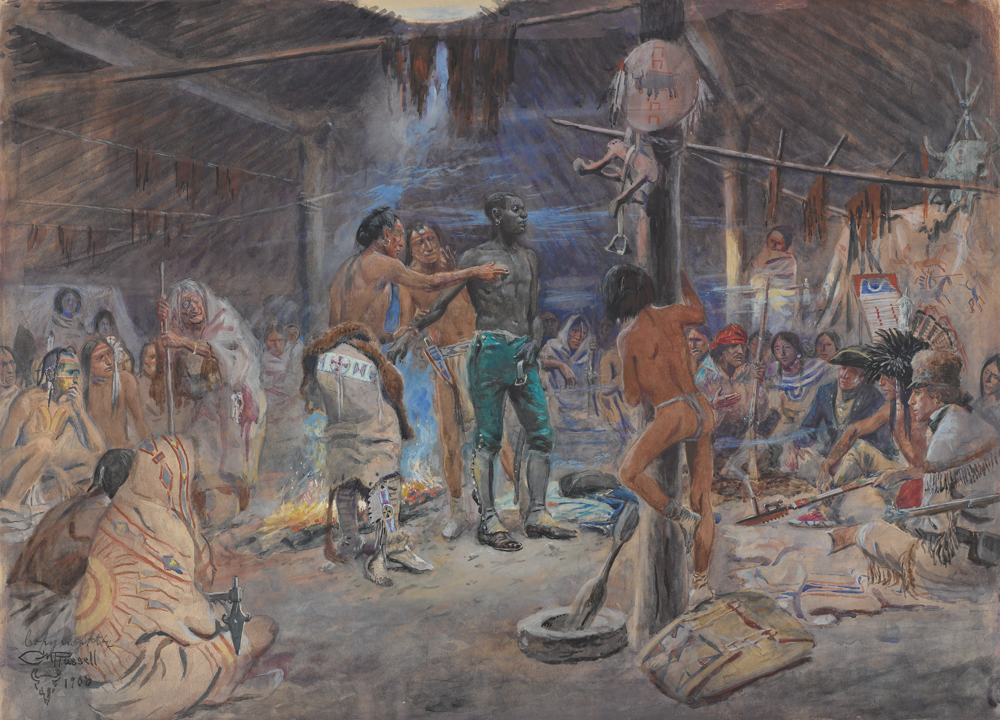
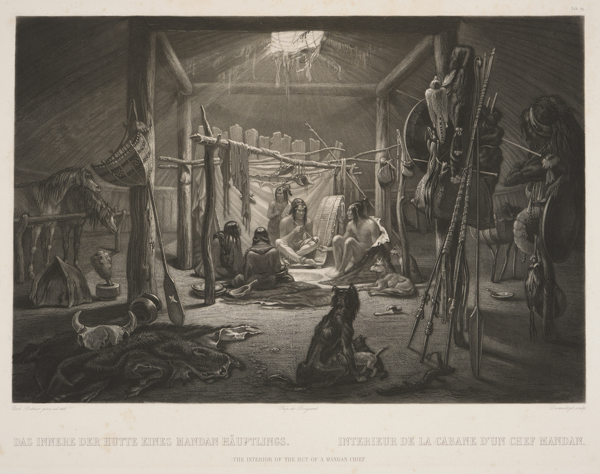
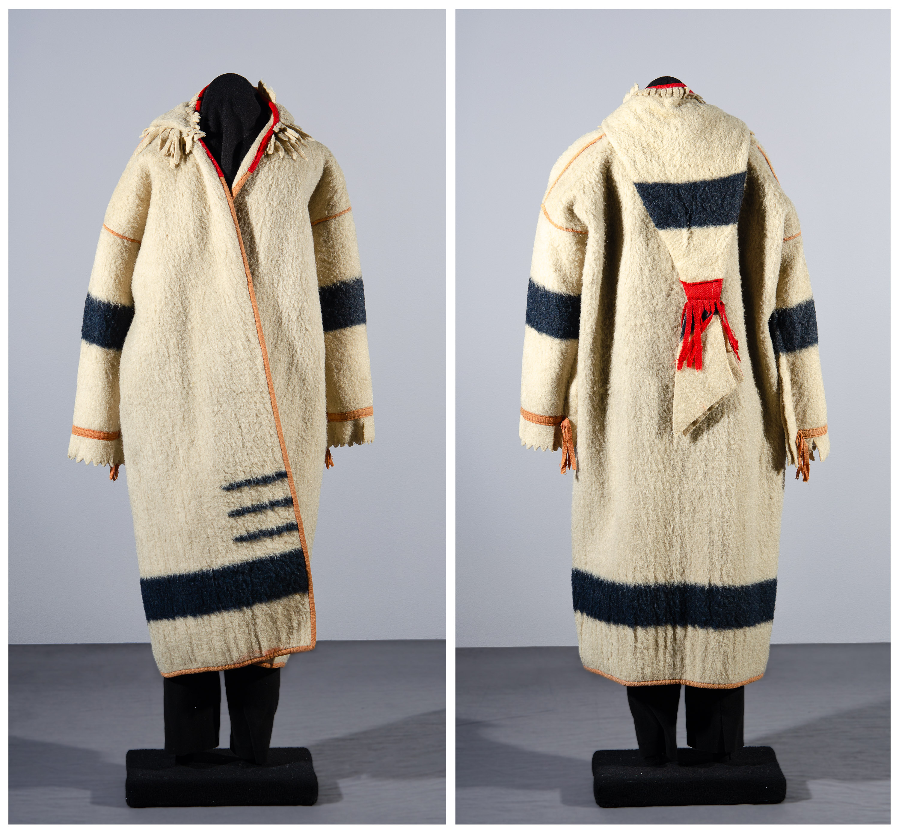
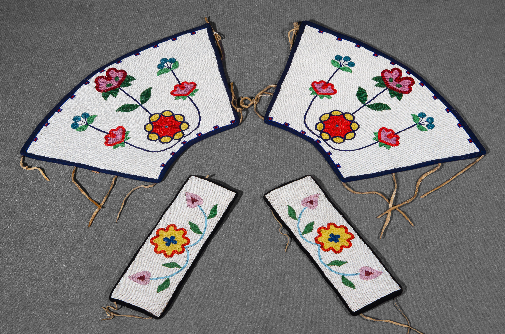
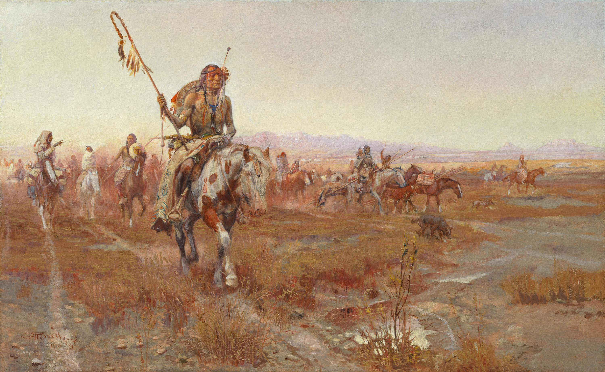
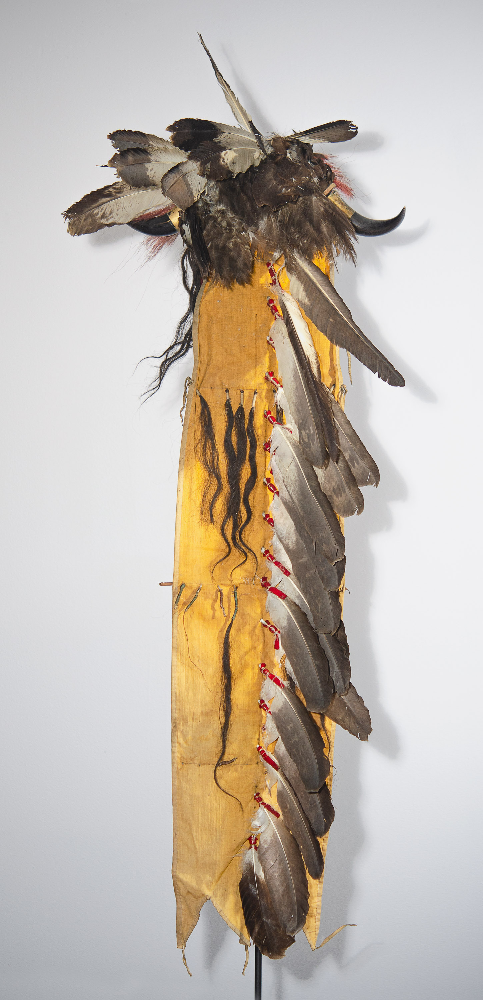
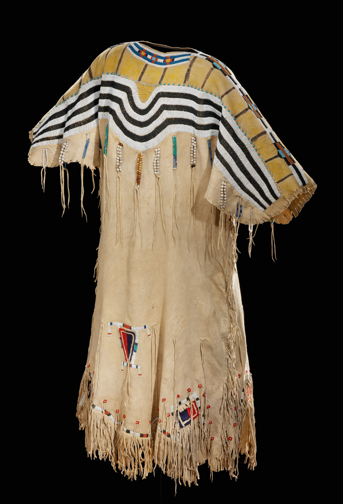
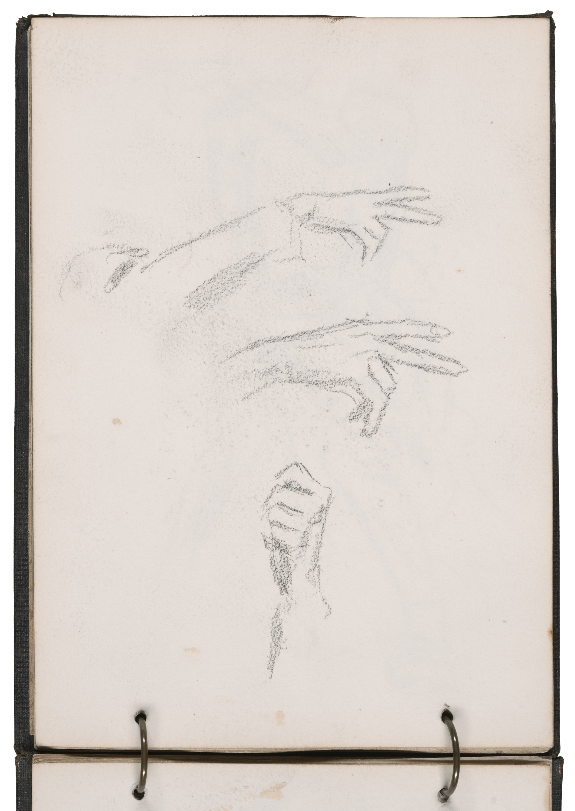
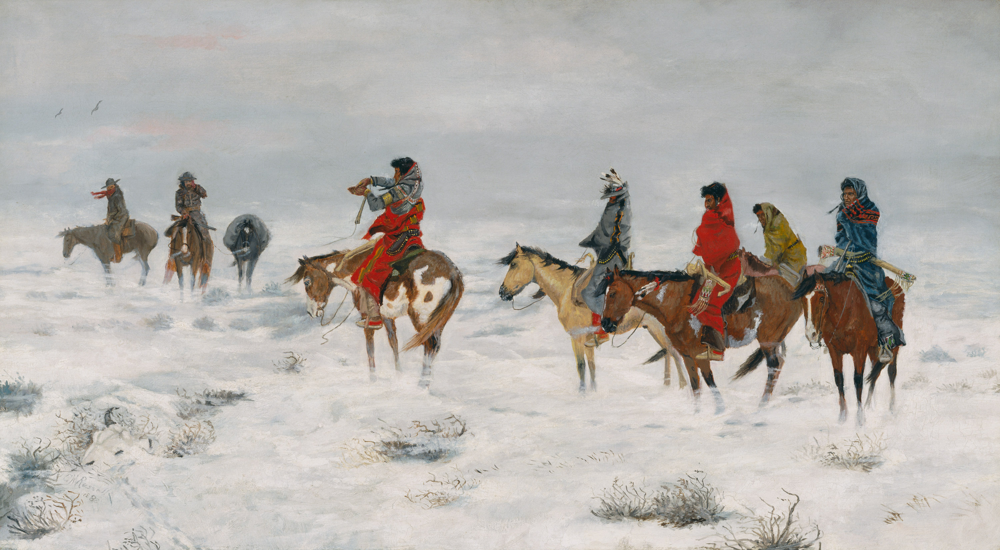

Contributors: Emily C. Burns, Annika K. Johnson, Melanie McKay-Cody,
Spencer Wigmore, and Michael D. Wise
This inaugural volume of the
Carter Bulletin underscores the Amon Carter Museum of
American Art’s commitment to knowledge creation through
independent scholarship relating to the Museum’s collection.
No artist is more appropriate for this first issue than
Charles Marion Russell
(1864−1926), the artist whose work defines in large measure
the foundational collection at the Museum.
Amon G. Carter Sr., the Museum’s namesake, amassed an in-depth collection of
works by both Russell and
Frederic Remington, making the Museum a prime resource for any study of their
mythologizing of the American West. That romantic vision,
however, is increasingly challenged by the real experiences of
Indigenous communities who vied for power on the frontier. The
essays in this issue consider that gap between romanticism and
reality with fresh perspectives toward making Russell a fully
realized artist working within complex social histories.
Carter Bulletin
Contents
Carter Bulletin: Vol. 1
Charles M. Russell: New
Perspectives
Emily C. Burns, Annika K. Johnson, Melanie McKay-Cody, Spencer
Wigmore, and Michael D. Wise
Amon Carter Museum of American Art, Fort Worth, Texas
Foreword
Scott Wilcox
The Carter Bulletin underscores the Amon Carter
Museum of American Art’s commitment to knowledge creation
through independent scholarship relating to the Museum’s
collection. This new initiative is rooted in the Carter’s
history, an institution that has long enlisted both young and
established scholars writing on new topics related to American
art.
This inaugural volume manifests a return to that impetus, to
use our remarkable collection to inspire new scholarship and
critical perspectives independent of any exhibition. And no
artist is more appropriate for this first issue than
Charles Marion Russell
(1864−1926), the artist whose work defines in large measure
the foundational collection at the Museum. Amon G. Carter Sr.,
the Museum’s namesake, amassed an in-depth collection of
paintings, sculpture, and works on paper by both Russell and
Frederic Remington, making the Museum a prime resource for any study of their
mythologizing of the American West. That romantic vision,
however, has been challenged by the real experiences of
Indigenous communities who vied for power on the frontier. The
essays contained in these pages consider that gap between
romanticism and reality with fresh perspectives toward making
Russell a fully realized artist.
Andrew Eschelbacher, Director of Collections and Exhibitions
at the Carter, developed the idea for this series of
occasional digital journals as he realized that so much of the
Museum’s research value attracts visitors, fellows, and
scholars to Fort Worth every year. Additionally, the Carter
operates an art study room that allows access to all the
Museum’s works on paper, including photographs, to any
visitor. All these resources generate interpretative
opportunities to explore a familiar subject through new lenses
of understanding. This newly conceived journal holds as its
main principle that insight into our collective history should
be open to everyone, enabling diverse voices to be heard,
challenged, and expanded.
Scott Wilcox Interim Director and Chief Operating Officer, Amon Carter
Museum of American Art
A Roundup
Ian Sampson,
Cartoonist, Printmaker, and Interdisciplinary
Educator,
West Virginia University
Panel 1/2
A Roundup
Panel 2/2
Charles M. Russell: New Perspectives
Spencer Wigmore,
Patrick and Aimee Butler Associate Curator of American
Paintings,
Minneapolis Institute of Art
In 1912, on a warm spring day in Great Falls, Montana, Charles
Russell experienced a moment of crisis. According to the
author Frank Bird Linderman, who was present at the scene,
Russell had been painting quietly for several hours in his log
cabin studio (fig. 1.1), working on a
commission for the Montana Legislature. After a time, the two
men heard a noise from outside: the clanging blows of a
laborer’s pickaxe. With this, Russell stopped painting.
“Things ain’t fair by a damn sight,” he muttered, rolling a
cigarette. “That poor devil out there in the hot sun with the
sweat runnin’ down his back can’t save as much as I’m gettin’
for this picture in his whole lifetime.” Mulling over this
inequity, Russell reflected on his own work: “Here I am
sittin’ in the shade with an electric fan blowin’ on my neck
gettin’ five thousand dollars for this thing. An’ I didn’t
make the canvas, an’ I didn’t make the paint, an’ I didn’t
make the brushes. I didn’t make a damn thing I’m usin’ to make
that money with. I just bought ’em with money I made by usin’
stuff that other men made for wages—an’ damn poor wages, too.”
He became increasingly upset. “By God,” he exclaimed, “that
man out there ought to hate me. I wouldn’t blame him a damn
bit if he walked in here an’ killed me with his pick.”
Troubled, he sat silently. Eventually, his mood softened. “But
I plumb had to paint,” he mused. “I’d have been dead long ago
if I couldn’t have painted. An’ that’s sure as hell.” He then
began to relax, and a moment later, he returned to work.1
Figure 1-1Unknown, Charles M. Russell and Nancy C. Russell’s
Montana home, ca. 1903, digital positive of a gelatin
silver negative,Gilcrease Museum, Tulsa, Oklahoma,
TU2009.39.256.7a
Linderman’s account offers a striking picture of Russell as he
navigates a crisis of conscience. Few of Russell’s
contemporaries ever commented on the wages of those who made
art supplies, so his remarks on the topic are compelling. But
Russell does not pursue this point any further; instead, he
retreats inward, searching for an explanation that will
alleviate his discomfort. Even though Linderman highlights
Russell’s sympathy toward wage laborers, inequality isn’t
really the point; the purpose of his story is to remind
readers of the salvational importance of Russell’s creativity.
Russell had an innate need to make art. He had to
paint. Without art, he would have fallen prey to his own
demons “sure as hell.” Read in this light, Linderman’s account
harbors an argument for how to properly interpret Russell: To
truly understand Russell’s art and how it was made, one must
understand what art meant to Russell. If his commercial art
supplies, his custom-built log-cabin studio, or the high
prices that he obtained for his pictures invite fraught
comparisons to certain forms of underpaid labor, Linderman
suggests that we should not make much of this, because the
artist’s motivations are pure. Indeed, the laborer and his
pickaxe are never mentioned again, and the story ends with
Russell jokingly inviting his friend to finish the foreground
of his picture. “Here,” he tells Linderman, “grab a brush an’
help me make this hay.”2
I have to admit, I find stories like this unsatisfying. To be
clear, I am not trying to imply that Russell should be viewed
as a hypocrite just because he used certain types of art
supplies or because he experienced commercial success. Nor am
I interested in dismissing Russell as insincere in his moral
commitments or in framing Linderman, one of the more
insightful chroniclers of Russell’s life, as a poor judge of
his friend’s character. I simply want to call attention to the
interpretive maneuver that is taking place here, and to
reflect on its implications. Creative intentions and inner
motivations can be useful forms of historical evidence (to the
extent that they can ever be truthfully reconstructed), and
art clearly meant a great deal to Russell. But interpretations
that focus only on these points can also function as an
interpretive detour, as a means of avoiding a direct
confrontation with the complex, difficult, and at times
painful realities contained within the historical archive. In
this case, they also culminate in a frustratingly tautological
reading: Russell’s art is meaningful because it was meaningful
to Russell.
In its effort to valorize Russell’s creative motivations,
Linderman’s tale also foreshadows a leitmotif of Russell
scholarship, particularly when it comes to the artist’s
nostalgic portrayals of pre-reservation Plains Native American
life. Over successive generations of writing on the artist,
scholars have disagreed about how to best approach these
works. This debate is too expansive to summarize here in
depth, but one recurring thread stands out: While some have
pointed to Russell’s use of crude racial stereotypes in his
work as evidence of his “patronizing contempt” for Indigenous
peoples and “smug sense of superiority” toward minorities, a
counter-reading has emerged that works to position Russell in
a more positive light.3
This reading centers on Russell’s sincerity; on his apparent
admiration, respect, and sympathy for dispossessed Native
Americans; and on certain public remarks, personal anecdotes,
and statements made in private correspondence. Read in this
light, Russell’s artworks are interpreted as
subversions of harmful period stereotypes, or at
least complications of them, with some even proposing that his
paintings actually portray the West from an identifiably
Native American point of view.4
While this framework still leaves some room to acknowledge the
presence of negative stereotypes and cultural
misrepresentations in Russell’s art, often with the
exculpatory rationale that Russell was a “man of his times,”
it considers these elements secondary to Russell’s own
positive feelings about Native peoples.5
In other words, what matters is that Russell cared deeply
about Native Americans, and any interpretation of his art
should keep this point in sight, even when confronted with
overtly stereotyped imagery. In fact, some have gone so far as
to suggest that the problem is not with Russell but with
present-day audiences who are too easily offended to
appreciate his views, a provocative claim that shows how
culture-war grievances can inform this discussion.6
However, interpretations that give such outsize weight to
Russell’s alleged intentions fail to encompass the full
complexity of his relationships and encounters with Native
peoples, the evolution of these relationships over time, or
the ways that he chose to characterize these relationships in
his art. Over the course of his career, Russell refined a
popular persona as a plainspoken, rough-and-tumble cowboy,
someone who had rejected the comforts of upper-class urban
society to pursue a lost era of open-range ranching and
pre-reservation life. In the course of this self-fashioning,
Russell sought to associate himself with Plains Native
American cultures. Through letters, public performances, press
interviews, storytelling, and even sign language, he presented
himself as someone who had been granted privileged access to
Montana’s Indigenous communities, particularly those that
retained a strong generational connection to pre-reservation
life. As one New York journalist put it, Russell “lived among
Indians until they have looked upon him as a ‘white brother,’
and to him they have told many of their stories and legends,
which the tourist might in vain attempt to gather.”7
The problem, though, is that much of what Russell said about
his early encounters with Plains Native Americans was not
actually true. He frequently claimed that he had wintered with
the Kainai tribe in Alberta in 1888, and that he had been
invited to marry into the community.8
However, Phil Weinard, Russell’s traveling companion during
the Alberta trip, maintained that the artist had made up the
tale, and historian Hugh Dempsey subsequently pointed out that
the tribal members whom Russell named as friends, particularly
Medicine Whip and Sleeping Thunder, are absent from tribal
rolls and oral histories.9
Put simply, Russell’s story is fiction. He exaggerated and
embellished his biography to bolster his credibility as a
witness of Indigenous life, and he went so far as to invent
characters who aligned with this narrative.
Figure 1-2Unknown, Charles M. Russell in Indian costume, ca. 1911,
gelatin silver print,Gilcrease Museum, Tulsa, Oklahoma,
TU2009.39.7651.129
Compounding matters, Russell freely appropriated Indigenous
art and material culture. Through trade and gifts, he amassed
a sizable collection of reservation-era Plains art, clothing,
and regalia, which he displayed in his Great Falls studio and
frequently used as props when painting. Family snapshots
indicate that Russell regularly wore these garments and posed
and performed in redface, often with friends and family
(fig. 1.2). In addition to “playing
Indian,” as this practice has come to be known, he created
facsimiles of Native American artworks, gave friends
faux-Indian names, and wrote correspondence using a
stereotyped vernacular.10
In turn, his finished paintings and sculptures often portray
Native-made items in historically anachronistic and culturally
misrepresentative settings, such as including items that were
created on reservations in pre-reservation scenes, or
presenting ceremonial items in ways that deviate from their
culturally specific functions. On occasion, he also posed as
an Indian in photographic studies for his own pictures,
raising the question of whether his depictions of Native
people involved an exoticizing form of projective
self-portraiture (fig. 1.3). Is it
really enough to contextualize these actions merely as
well-intentioned expressions of sincere cultural appreciation?
Russell biographer John Taliaferro offers a more cautioned
reading, concluding that “grown men who darkened their faces,
dressed up like braves, and struck cigar-store poses, as
Charlie did regularly . . . were paying tribute more to the
tradition of the Anglo-Saxon house party than that of a
dignified and complex indigenous people.”11
As Taliaferro’s reading suggests, even if Russell did mean
well, this still seems an unsatisfying conclusion to
repeatedly try to end on, and it may well be a painful one for
many. The pictures still exist, after all, and they continue
to occupy pride of place within museums, regardless of whether
they offer a truthful accounting of the communities and
cultures that they claim to represent.
Figure 1-3Unknown, Charles M. Russell, ca. 1900–10, gelatin silver
print,Gilcrease Museum, Tulsa, Oklahoma,
TU2009.39.7473
Efforts to divine Russell’s intentions also risk overlooking
the significance of Russell’s Native interlocutors as well as
the visual and material cultures that they created. The
Indigenous items that Russell collected, repurposed,
represented, and misrepresented in his art are components of a
rich and complex social life in reservation-era Montana. When
Russell donned regalia from his collection or used a Native
item as a prop for a painting, he was using something made by
someone else, someone with their own inherited cultural
traditions, their own creative agency, and their own sense of
that object’s purpose and significance. Yet the histories of
these makers and their creations—their origins, their
meanings, and the ways in which they circulated within
turn-of-the-century Montana—have received comparatively little
attention within scholarship on the artist, save for
observations about tribal attribution and cultural function
sourced primarily from mid-twentieth-century Euro-American
ethnographic literature. This is a missed opportunity.
Broadly construed, the Indigenous belongings that Russell
collected and incorporated into his paintings evidence efforts
by A’aninin (Gros Ventre), Apsáalooke (Crow), Nakoda
(Assiniboine), Piikani (Blackfeet), Métis, and other Plains
communities to maintain cultural continuity in the face of
state-sanctioned dispossession, unequal markets, forced
confinement, and frequently violent attempts at assimilation.
They also evidence some of the strategies, both visual and
commercial, that Indigenous makers used to represent
themselves and their communities to curious outsiders such as
Russell.12
Might Russell’s artworks retain recognizable traces of these
strategies, even in the instances when he, whether knowingly
or not, portrayed Indigenous life in culturally
misrepresentative ways? In turn, might his works serve as a
useful resource for recovering fragments of the lives,
perspectives, and experiences of his Native counterparts who
had been displaced and confined to reservations? In other
words, can we read Russell’s art in such a way that it
enriches our understanding of the broader cross-cultural
landscape of reservation-era Montana, as well as Russell’s own
place within it? Such questions are at the heart of this
volume.
Carter Bulletin
In this inaugural issue of the Carter Bulletin, which
represents a new publication initiative dedicated to advancing
scholarship on the Carter’s collection, four short essays as
well as a serial cartoon offer a new assessment of Russell’s
life and work. Specifically, this project reframes Russell’s
creative practice as an attempt to craft a nostalgic,
celebratory vision of the Old West from sources that evidence
Indigenous efforts to navigate the harsh realities of
Montana’s colonization. In developing this framework, the
essays that follow consider a range of topics, including
Russell’s collection of Indigenous art and material culture,
his fascination with reservation-era beadwork, his portrayals
of Plains Indian Sign Language, and his ambivalence toward the
domestication of wildlife. Much like the aforementioned
laborer’s pickaxe, these subjects announce themselves in
unexpected, sometimes jarring ways. They interrupt established
narratives, prompting critical reflection on the mythologies
and assumptions that burnish Russell’s legacy. Yet in doing
so, they make a case for the continued relevance of Russell’s
art as an object of study and appreciation.
The opening essay in this volume, by
Dr. Annika K. Johnson, Stacy and Bruce Simon Curator of Native
American Art at the Joslyn Art Museum in Omaha, Nebraska,
introduces this new lens by considering Russell’s personal
collection of Indigenous art and material culture, which he
acquired over several decades and kept in his studio in Great
Falls (fig. 1.4).13
This collection, she stresses, sheds important light on how
Russell’s Indigenous counterparts chose to engage with the
artist. Through a focused discussion of several
belongings—including a capote presented to Russell by Buffalo
Coat, a nêhiyaw (Cree) man who often visited Russell in Great
Falls, and a shirt and leggings given to the artist by Big
Bear, an A’aninin man at Fort Belknap—Johnson underscores how
Native values of reciprocity and gift giving informed
Russell’s access to Native-made goods, though not necessarily
how he chose to use or portray them. In developing her
insights, Johnson also attends to notable gaps in Russell’s
collection, namely the absence of ceremonial belongings
associated with manhood and warfare, which were typically not
made available to outsiders via trade or gift giving. Russell
was fascinated with such items, so he manufactured his own
facsimiles as substitutes, including a fur-and-wool-wrapped
wooden staff resembling a coup stick. In charting the paths
that various belongings took on their way to Russell’s
possession, Johnson’s essay reveals an instructive tension
between how Russell chose to portray Native material cultures
in his paintings and how he actually encountered and engaged
with such items during the reservation era.
Figure 1-4Unknown, Inside of Charles M. Russell’s studio, ca.
1903–05, gelatin silver print,Gilcrease Museum, Tulsa, Oklahoma,
TU2009.39.262.152
The subsequent essay, by Dr. Emily C.
Burns, Charles Marion Russell Chair at the University of
Oklahoma, continues this focus on Russell’s collection. Burns
centers on the Blackfeet dress that Russell portrayed in his
well-known watercolor Sun Worship in Montana. She
reminds us that the meaning of this dress, which was sourced
from Russell’s studio collection, is not limited to Russell’s
interest in the garment, his knowledge of it, or the ways that
he incorporated it into his art. Rather, a substantive
understanding of the dress must center on its significance
within Blackfeet culture. Blackfeet concepts of relationality
and reciprocity are inextricable components of the dress’s
form, materiality, and circulation, even when such concepts
are distorted, suppressed, or marginalized by Euro-American
modes of collecting and representation. In the course of her
analysis, Burns calls attention to scholarly neglect of
Josephine Wright, a Blackfeet woman who befriended the Russell
family, worked for them, and posed for a number of Russell’s
paintings. She highlights Wright’s significant role in shaping
the artist’s access to and knowledge of Blackfeet cultural
traditions. Building on this discussion, she highlights
certain unacknowledged affinities between Russell’s pictorial
style and the forms and patterns created by Native women
makers, particularly beaders. She suggests that Russell may
have drawn inspiration from Indigenous traditions of
abstraction even as he disparaged emerging trends in European
abstract art. Through her analysis of the manifold meanings
contained within the dress, Burns emphasizes aspects of
Russell’s life and art that resist, counter, or disrupt his
efforts to appropriate Indigenous objects and cultural
traditions for his own ends, and she encourages other scholars
to do the same.
The third essay, by Dr. Melanie
McKay-Cody, Assistant Professor in the Department of
Disability and Psychoeducational Studies at the University of
Arizona, pivots from a consideration of material culture to a
discussion of language. In his art, Russell frequently
portrayed figures using Plains Indian Sign Language (PISL),
but he was attentive to the limits of painting and sculpture
as a medium for portraying PISL signs.14
In a letter to William Tomkins, an early twentieth-century
ethnographer and the author of
Universal Indian Sign Language of the Plains Indians of
North America
(1926), Russell wrote: “I have tryed [sic] sometimes
in my pictures to make Indians talk sign but it is hard to
make signs with out motion.”15
With such limits in mind, McKay-Cody considers Russell’s
portrayals of individual signs as well as their contextual
usage. She notes that Russell’s pictures are limited in their
ability to capture the nuances of individual signs as well as
the linguistic diversity of PISL within Plains communities.
Nonetheless, Russell’s work stands out within the genre of
western American art for its attentiveness to the rich and
diverse social life of sign language across the Native
cultures of the Plains, including not only contexts of trade,
warfare, and hunting but also cross-cultural communication and
intergenerational storytelling.
The closing essay, by Dr. Michael D.
Wise, Professor of History at the University of North Texas,
examines Russell’s place in early twentieth-century Montana
through the lens of his anti-modern sentiments. Russell, as is
widely known, had little affection for industrialized and
urbanized modernity. He preferred forms of experience that
retained a direct connection to the open range. He disliked
the crowds, noise, and density of cities, lamented new forms
of communication technology (with the exception of Hollywood
films), and disdained automobiles.16
Wise revisits Russell’s anti-modern views, correlating them
with an emerging technological transformation in U.S. society:
the shift from equestrian “muscle power” to automotive power
driven by fossil fuels.17
Wise proposes that Russell’s artworks valorize muscle power as
a reassertion of a heroic, muscular vision of human-animal
relationships, one in which masculinity is premised on a
physical, often violent struggle for dominance and mastery of
nature. This worldview, Wise notes, also included a pronounced
distaste for pets and petkeeping, a form of relationality that
short-circuited Russell’s conception of manliness and
self-sufficiency. By revisiting the role of human-animal
encounters in Russell’s art, Wise’s essay invites us to
revisit the broader technological and industrial
transformations underway in turn-of-the-century Montana. Not
only did such transformations dramatically reorganize
human-nonhuman relationships, particularly in ways that worked
to suppress Indigenous ways of living alongside animals, they
also complicated Russell’s own conception of how colonized
lands should be enjoyed and appreciated.
Russell’s legacy stems in large part from his renowned skills
as a storyteller. Not only did he craft dramatic portrayals of
the Old West in oil, watercolor, and bronze, but he was also
accomplished in prose and in illustration. In recognition of
Russell’s multimedia sensibility, this inaugural issue of the
Carter Bulletin is illustrated with a serial cartoon
by Philadelphia artist Ian Sampson. Over the course of the
volume, Sampson takes readers on a journey through Russell’s
art led by Rawhide Rawlins, one of Russell’s best-known
protagonists from his prose fiction. In a tale reminiscent of
Charles Dickens’s A Christmas Carol, Rawlins appears
in Russell’s studio to converse with the artist and discuss
his legacy. Placed at the start of each essay, the cartoon
panels draw inspiration from the arguments and ideas of the
authors, giving new dimension and depth to Russell’s
engagement with histories of collecting, sign language,
automobiles, and animals. Richly illustrated and thoughtfully
narrated, Sampson’s cartoons offer a lively and accessible
entry point into the core ideas of this volume. In turn,
Sampson underscores both the complexity of Russell’s character
and the challenge of distilling the artist’s persona down to a
straightforward narrative of heroic intentions or, conversely,
total capitulation to stereotype and trope.
Presented together in this volume, these contributions are
meant to spark renewed interest in Russell’s art within art
history. Rather than offering exhaustive and authoritative
declarations, the authors present their findings as
invitations for further inquiry. Together, they argue for the
enduring relevance of Russell’s art as an object of study.
However, such work harbors within it a larger and as yet
unfulfilled commitment. While I believe firmly in the
continued utility and importance of Russell’s art, I have been
able to study these pictures from a position of relative
comfort. While at times I have struggled to relate to the
boisterous world that Russell depicts, I have never felt
misrepresented by it. This is a significant difference, and
one that museums must grapple with if they hope to make a
robust case for Russell’s enduring cultural prominence. Over
successive generations, Russell scholarship has proceeded with
minimal input from the Native communities whose cultures
appear in his artworks, a criticism that could be directed at
this volume as well. A richer, more fulsome, and more truthful
understanding of Russell will require a sustained commitment
to relationship building and an embrace of shared expertise
and interpretive authority. As Johnson writes in her essay,
“The next phase of research must adopt a more reciprocal
approach. . . . This collaborative effort is vital for
developing a deeper, more nuanced understanding of Russell’s
legacy and ensuring that the interpretations of his work are
informed by those who are most connected to the stories he
depicted.” Inclusive and collaborative forms of scholarship,
rooted in concerted efforts toward relationship building, will
help institutions address key questions surrounding Russell’s
legacy. It is our hope that this volume will contribute to
further conversation on these issues.
Endnotes
Frank Bird Linderman,
Recollections of Charley Russell, ed. H. G.
Merriam (Norman: University of Oklahoma Press, 1984),
99. ↩︎
Linderman, Recollections of Charley Russell,
99. ↩︎
J. Gray Sweeney, “Racism, Nationalism, and Nostalgia,”
in
Race-ing Art History: Critical Readings in Race and
Art History, ed. Kymberly N. Pinder (Abingdon, UK: Routledge,
2002), 160.
↩︎
James P. Ronda, “Charlie Russell Discovers Lewis and
Clark,” in
The Masterworks of Charles M. Russell: A
Retrospective of Paintings and Sculpture, ed. Joan Carpenter Troccoli (Norman: University of
Oklahoma Press, 2009), 197−209. Similarly, Rick Stewart
asserts that “in many of his finest watercolors man and
nature are inseparable within a spiritual world
that—according to the Native American way of seeing—must
first be ‘believed’ in order to be ‘seen.’” Rick
Stewart,
Charles M. Russell Watercolors, 1887−1926 (Fort
Worth, TX: Amon Carter Museum of American Art, 2015),
16. ↩︎
Brian W. Dippie, “‘What a Pair to Draw To’: Charles M.
Russell and the Art of Storytelling Art,” in Troccoli,
The Masterworks of Charles M. Russell, 169.
↩︎
Raphael James Cristy,
Charles M. Russell: The Storyteller’s Art
(Albuquerque: University of New Mexico Press, 2004), 63.
↩︎
“Smart Set Lionizing a Cowboy Artist,”
New York Press, January 31, 1904.
↩︎
See, for instance, “Cowboy Vividly Paints the Passing
Life of the Plains,” New York Times, March 19,
1911. ↩︎
Hugh A. Dempsey, “Tracking C. M. Russell in Canada,
1888–1889,”
Montana The Magazine of Western History 39, no.
3 (Summer 1989): 4−6. Dempsey did confirm that Russell
had spent time with the family of Apskinas, a Kainai and
Sarcee man who lived independently outside of the
reserve, but the extent of his contacts with the Kainai
in Alberta remains undocumented within Euro-American
sources.
↩︎
For a characteristic example, see Charles M. Russell to
William Crawford, in
Charles M. Russell, Word Painter: Letters
1887–1926, ed. Brian W. Dippie (New York: Harry N. Abrams,
1993), 124−25.
↩︎
John Taliaferro,
Charles M. Russell: The Life and Legend of America’s
Cowboy Artist
(Norman: University of Oklahoma Press, 2003), 186.
Taliaferro’s assessment echoes the insights of Philip J.
Deloria, who highlights how White Americans during the
Gilded Age often played Indian to invent and temporarily
inhabit an identity that seemed more authentic than what
was available within urbanized society. Philip J.
Deloria, Playing Indian (New Haven: Yale
University Press, 1998).
↩︎
In this sense, such belongings might be characterized as
a form of what Mary Louise Pratt describes as
“autoethnography,” in which colonized subjects represent
themselves—through art, writing, speech, or other forms
of cultural communication—in ways that confront or
engage with how colonizers see them. Mary Louise Pratt,
Imperial Eyes: Travel Writing and
Transculturation
(Abingdon, UK: Routledge, 1992), 7.
↩︎
The collection is now housed in the C. M. Russell Museum
in Great Falls, Montana.
↩︎
Russell’s portrayals of sign language are also discussed
in detail in Mark Andrew White’s insightful essay “‘I
Heap Savvy You’: Charles M. Russell, Joe De Yong, and
the Pictorial Value of Hand-Talk,” in
Charlie Russell and Friends (Denver: Petrie
Institute of Western American Art, Denver Art Museum,
2010), 45−56. Additional useful context can be found in
Brian Hochman,
Savage Preservation: The Ethnographic Origins of
Modern Media Technology
(Minneapolis: University of Minnesota Press, 2014),
35−72; and Kay Yandell, “The Moccasin Telegraph:
Sign-Talk Autobiography and Pretty-shield, Medicine
Woman of the Crows,” American Literature 84,
no. 3 (September 2012): 533−61.
↩︎
Charles Russell to William Tomkins, May 27, 1926, in
Dippie, Charles M. Russell, Word Painter, 392.
↩︎
On Russell’s love for Hollywood, see Alexander Nemerov,
“Projecting the Future: Film and Race in the Art of
Charles Russell,” American Art 8, no. 1 (Winter
1994): 70−89.
↩︎
Elsewhere, Wise has documented how the emergence of the
stock-raising industry profoundly reshaped cultural
attitudes toward animals in Montana. Michael D. Wise,
Producing Predators: Wolves, Work, and Conquest in
the Northern Rockies
(Lincoln: University of Nebraska Press, 2016).
↩︎
The Collector
Ian Sampson,
Cartoonist, Printmaker, and Interdisciplinary
Educator,
West Virginia University
Panel 1/2
The Collector
Panel 2/2
I.
Cultural Intersections in Charles M. Russell’s Studio Collection
Annika K. Johnson,
Stacy and Bruce Simon Curator of Native American
Art,
Joslyn Art Museum
Over the past decade, curators and historians of American art
have begun to turn their attention to the rich history of
Indigenous artistic production. As the field continues in this
vital new direction, it is essential to highlight the
contemporaneous works of both Native and non-Native creators.
Toward this end, the collections of Indigenous art owned by
such well-known painters as Karl Bodmer, George Catlin,
Benjamin West, and N. C. Wyeth can provide invaluable starting
points for deeper investigation, illumining previously
unexamined signs of cross-cultural exchange.1
Such artists’ depictions of Indigenous subjects invite a
critique often centered on representational accuracy that,
while significant, oversimplifies the inherent tensions of the
artist’s role as a participant in cultural exchange.
In this context, Charles M. Russell, renowned for his
depictions of the American West, emerges as a distinctive
figure. Russell not only painted vivid scenes of Indigenous
American life but also amassed a significant collection of
Native American cultural belongings—an aspect of his artistic
practice that has remained relatively unexamined by scholars.
This collection presents a fascinating window into Russell’s
studio practice, providing important insights into his
encounters with Native peoples, both in his artistic
imagination and throughout his life in Montana.2
It also provides us with a unique opportunity to move beyond
the identification of stereotypes in Russell’s art and to
instead contextualize his career within the era of U.S.
allotment and assimilation policies, which had a dramatic
impact on Indigenous creative production. This essay aims to
provide an introduction to Russell’s collection of Native
American cultural belongings, both those he acquired and those
he created, while also suggesting avenues for future research
into Russell’s art, his studio practice, and his relationships
with Indigenous peoples.
Russell’s Studio Collection
Numerous photographs illustrate how Russell filled his studio
with Native American cultural belongings, cowboy gear, and
objects reminiscent of the Old West
(fig. 2.1). His “Indian curios,” as
they were called in Russell’s time, range from men’s fringed
buckskin shirts and leggings, beaded dresses, gauntlets, and
saddles to household items from camp life. After the artist’s
death in 1926, much of his studio collection remained intact;
today, it forms part of the C. M. Russell Museum in Great
Falls, Montana. In 1927 Joe De Yong, Russell’s protégé,
created a detailed inventory of the artist’s collection that
offers crucial insights into the eclectic mix of items that
Russell left behind. De Yong’s inventory list includes art
supplies such as chisels, modeling clay, varnish, and several
paint tubes; personal effects, keepsakes, and photographs; and
half-finished paintings, western art prints, Stetson hats, and
cigarette rolling papers. In addition, the inventory reveals
over 100 items that are either of Native American manufacture
or related to Native American culture.3
These encompass beaded regalia and household items from the
Northern Plains. Additionally, there are several Diné (Navajo)
and Hopi moccasins and ceramics Russell collected during his
trip to Arizona in 1916, as well as several facsimile items
that were made by Russell.
Figure 2-1Unknown, Charles M. Russell studio, ca. 1900, gelatin
silver print,Gilcrease Museum, Tulsa, Oklahoma,
TU2009.39.7471a-b
Most of the Indigenous items in Russell’s collection reflect
his surroundings in the Hi-Line region of the Northern Great
Plains, with cultural belongings primarily originating from
Salish (Flathead), Niitsitapi (Blackfoot), Kainai (Blood),
Nakoda (Assiniboine), A’aninin (Gros Ventre), nêhiyaw (Cree),
and Anishinaabe (Chippewa) communities. De Yong occasionally
added annotations to his inventory entries, offering valuable
information about the cultural significance, tribal
attribution, and history of Russell’s Native collection. This
information, along with photographs, letters, and a visual
analysis of the remaining Native items in the studio
collection, suggests that most of these works were created on
reservations between the 1880s and the early 1920s.

Figure 2-2Charles M. Russell (1864-1926), York, 1908,
watercolor, 19 x 25 1/2 in.,Montana Historical Society Collection, Gift of the
artist,
X1909.01.01

Figure 2-3Karl Bodmer (1809-1893),
The Interior of the Hut of a Mandan Chief.,
ca. 1840-44, mezzotint and etching, 11 1/16 x 16 5/16
in.,Amon Carter Museum of American Art, Fort Worth,
Texas,
1965.169.50
Many of these items made their way into Russell’s paintings
and watercolors. These artworks, which include scenes of war
parties, buffalo hunts, and daily camp life, reinterpret the
items in his collection. Namely, they transpose these
materials into the pre-reservation West in ways that
complicate our understanding of the artist’s relationship to
Native art. Russell often included culturally incongruous
items in his work, collapsing decades of changes in Native
artistic practice. For example, his painting
York reimagines a historical encounter between
Hidatsa people and Captain William Clark’s enslaved attendant,
York (fig. 2.2). However, the picture
includes an abundance of cultural materials from the wrong
tribe. Russell based his rendition of this scene on the print
version of Karl Bodmer’s
The Interior of the Hut of a Mandan Chief, the
original of which was created near Fort Clark in the winter of
1833 (fig. 2.3).4
In his adaptation, Russell substituted the Mandan society
gear, burden basket, and bullboat paddle featured in Bodmer’s
rendering with items manufactured several decades later by
Piikani (Blackfeet) people. These include a beaded blanket
strip, a knife case, a beaded buckskin dress, a pictorial
painted shield and tipi liner, and a willow-branch backrest,
items that were modeled after objects in Russell’s studio
collection.5
Notably, the bold geometric designs painted in primary colors
on the buffalo rawhide container in the foreground directly
replicate an example of the sturdy storage container Russell
acquired around 1901 (fig. 2.4).6
These items certainly would not have been present in an
earth-lodge village in 1804, or even during Bodmer’s visit to
the Knife River Indian Villages three decades later.
Figure 2-4Plains artist, Buffalo parfleche, ca. 1901, rawhide and
paint,C. M. Russell Museum, Great Falls, MT, S991.19.364
Rather than explaining these anachronisms away as artistic
indulgence or evidence of Russell’s limited understanding of
the past, they are an invitation to seek a fuller
understanding of the cultural landscape at the turn of the
century. The artist’s career unfolded during the era marked by
the 1883 Religious Crimes Code, which banned customary dances
until 1933 and ceremonies until the act was repealed in 1978.
Russell was aware of the profound shifts in Native American
material culture that resulted from U.S. policies of
displacement and dispossession that took place during his
lifetime. Despite his preference for painting what he saw as
the authentic Old West, his collection primarily comprises
Indigenous art made after the establishment of reservations
and decimation of the buffalo. Seen in this light, his
collection offers invaluable evidence of the resilience of
Native peoples during this transformative era.
Collecting Native Art on the Hi-Line
Russell’s first meaningful encounter with Native American
people occurred in the late 1880s, when he journeyed through
the Kainai lands in present-day Alberta, Canada. During this
trip, Russell spent three summer months in a cabin near Fort
Macleod and could have obtained a few items from Kainai
communities. However, De Yong’s inventory documents only one
object, a buckskin sash, as having been obtained from Fort
Macleod in the late 1880s.7
While there could have been more that did not remain in
Russell’s studio at the time of his death, it is more likely
that at that point in Russell’s career, he lacked the rapport
with Native peoples and the financial resources needed to
collect in abundance or systematically.8
Russell began collecting Native art predominantly from
northern Montana in the early 1890s, coinciding with the
consolidation of various rail lines into the intercontinental
Great Northern Railway. The main rail line through Montana,
called the Hi-Line, borders the Fort Peck, Fort Belknap, Rocky
Boy’s, and Blackfeet Reservations, where tribes with distinct
languages, lifeways, and artistic styles were forced to
permanently settle together in the late nineteenth century.
The Hi-Line came to define a regional style of beadwork, which
Dr. Jessa Rae Growing Thunder characterizes as featuring
“clear moments of distinct tribal styles, but there are also
moments when those lines become blurred, and we see the
intertribal inspiration contribute to the overarching
aesthetics of the region.”9
The prominent use of Sioux-blue and Cheyenne-pink glass seed
beads, the flat-stitch beading technique, and the
experimentation with bold geometric and floral designs are all
Hi-Line characteristics prominent in Russell’s collection of
Native beadwork. In turn, they offer evidence of the ways that
artists created new visual forms amid a rapidly changing
environment shaped by the near extinction of buffalo, the
economic dominance of cattle ranching, and the emergence of
the cultural tourism industry in Montana. As artists shifted
to using materials like cowhide and wool, gained access to a
broader range of bead colors at a lower cost, and spent
extended periods on reservations, their beadwork became more
elaborate. These conditions set the stage for the creation of
non-ceremonial garments and objects intended for cultural
outsiders that diverged from earlier, community-specific needs
and traditions.
The Fourth of July gathering held on the Fort Belknap
Reservation in 1905 was the kind of federally sanctioned
social event at which Russell could acquire beadwork from this
region. Native families adopted the U.S. holiday to honor
their tribal veterans and socialize through mock battles,
horse racing, hand games, and traditional meals. Local
newspapers promoted these multiday gatherings, which were
attended by hundreds of families from reservations across
northern Montana as well as non-Native visitors who traveled
to reservations by rail.10
At the time of the 1905 gathering, Fort Belknap was home to
two distinct, previously opposing nations of A’aninin and
Nakoda people, both of whom were facing substantial pressure
to cede additional lands to White settlers, this time opening
some 40,000 acres of tribal lands along the Milk River. The
Great Falls Tribune expressed the patronizing
attitude that the Indians had “entirely too much land for them
to handle . . . they must secure more money or work like white
men.”11
Congress would approve the cession later that year,
diminishing the tribes’ land holdings and challenging their
water rights.12
Despite these assaults on Native sovereignty and traditions at
the turn of the century, families continued to practice the
Sun Dance, Grass Dance, and other summertime ceremonies in
secret as well as under the guise of American patriotism.
Figure 2-5A’aninin (Gros Ventre) maker, Man’s shirt (front/back),
ca. 1900, buckskin, glass beads, wool, and ermine
tails,Given to Charles M. Russell by Big Bear (A’aninin), C. M.
Russell Museum, Great Falls, Montana, S991.19.373
According to De Yong’s inventory, Russell received a shirt and
a pair of leggings from an A’aninin man named Big Bear on the
Fort Belknap Reservation during what the artist referred to as
a Medicine Dance. Both items show signs of wear that indicate
they were made for tribal use rather than for sale to
non-Natives. The shirt, made of cropped deer hide, features
wool-wrapped ermine fringes adorning the shoulders and
arms—decoration characteristic of the Northern Plains. Two
wide strips of flat-stitch beadwork extend from the front of
the shirt, over each shoulder, to the middle of the shirt’s
back (fig. 2.5). De Yong identified the
shirt as being from the Fort Belknap Reservation, an
assessment supported by the geometric checkered and elongated
diamond patterns; the color combination of forest green,
pumpkin orange, greasy yellow, and navy blue; and the
incorporation of white hearts and steel-cut beads, all set
against a dark periwinkle beaded background.13
Unlike the flat-stitch beaded shirt strips, the geometric
lodge designs on the legging strips were beaded using a
technique called the “lane stitch,” comprised of parallel rows
of six to eight beads per stitch
(fig. 2.6). The coexistence of Northern
and Central Plains beading techniques reflects the diversity
of traditions that coexisted on the reservation and may even
indicate that the shirt and leggings were created by different
artists from different tribes.
Figure 2-6A’aninin (Gros Ventre) maker, Man’s leggings, ca. 1900,
glass beads, buckskin, and ermine tails,Given to Charles M. Russell by Big Bear (A’aninin), C. M.
Russell Museum, Great Falls, MT, S991.19.372a,b
This shirt and leggings appear in several photographs taken by
Sumner W. Matteson, an itinerant photographer from Iowa who
traveled to Fort Belknap in the company of Charles Russell and
his wife, Nancy. During the visit, Matteson documented the
dances, battle reenactments, feasts, and giveaways that
occurred over several days, and he published his findings in
the Pacific Monthly in 1906.14
Several of his photographs show a man wearing the shirt and
leggings that Russell had acquired
(fig. 2.7). While research has not
conclusively identified the sitter, it is believed to be Big
Bear himself, who had corresponded with Russell and received
numerous photographs, drawings, and carvings from the
artist.15
Perhaps the artist received the garments as a token of
friendship, or during a giveaway, a traditional practice of
gifting blankets, regalia, and even horses to the community in
honor of an individual. George P. Horse Capture, reflecting on
Russell’s time with the A’aninin people, recounted that “the
Indian people gave beautiful gifts to Russell as well;
exchanging gifts is a custom among us.”16
Even if we do not know the exact circumstances of the
exchange, Russell was a familiar presence on the reservation
and had developed friendships with individuals like Big Bear
and the well-known A’aninin elder Bill Jones.17
Figure 2-7Sumner W. Matteson (1867-1920),
Indians at Fort Belknap Reservation, 1905,
gelatin silver print,Milwaukee Public Museum,
43757
Russell prominently displayed the shirt and leggings from Big
Bear in his Great Falls studio, and these garments were also
worn and used, including by people from different tribes. In a
1916 photograph, an Anishinaabe elder and spiritual leader
named Chief Big Rock donned the Fort Belknap regalia and posed
with Russell and the writer Frank Bird Linderman in front of a
tipi (fig. 2.8). The photograph was
taken to commemorate Big Rock’s trip to Great Falls to share
traditional stories with his longtime acquaintance Linderman
for the book
Indian Old-Man Stories: More Sparks from War Eagle’s
Lodge-Fire
(1920). Russell, who was to illustrate the publication, made
an elaborate production of the four-day visit, erecting a tipi
in his neighbor’s backyard and furnishing it with domestic
items from his collection.18
The meeting garnered the attention of the press, and Russell
possibly lent the outfit for Big Rock to model in an effort to
maintain a more “authentic” appearance. The three well-known
men were also advocates for the landless Anishinaabe, nêhiyaw,
and Métis refugees who had suffered years of forced relocation
and broken promises. Linderman had led the effort to raise
awareness of the mistreatment of the landless families among
White Montanans, garnering the support of colleagues like
Russell.19
In 1916, Congress passed legislation establishing Rocky Boy’s
Reservation in northern Montana, west of Fort Belknap.
Figure 2-8Unknown, Frank Bird Linderman, Chippewa Chief Big Rock,
and Charles M. Russell in front of a lodge, 1916,Archives & Special Collections, Mansfield Library,
University of Montana,
007.VIII.441
This moment of public advocacy emerged from personal
relationships that involved the exchange of stories, support,
and gifts. In Northern Plains communities, reciprocity is a
core value, grounded in kinship, mutual obligation, and the
ongoing care of relationships. These principles shaped the
ties between Russell and his Native acquaintances and find
clear resonance in Russell’s collections. Two brothers named
John Young Boy and Buffalo Coat, both members of Little Bear’s
landless band of nêhiyaw people, exemplified this tradition.
They often visited Great Falls and exchanged gifts with
Russell, marking a friendship that began in the 1880s and
continued after the establishment of Rocky Boy’s
Reservation.20
In 1900, Buffalo Coat presented Russell with a capote, an
iconic style of Northern Plains hooded coat crafted from a
Hudson’s Bay blanket, which Russell often wore and
incorporated into many of his paintings
(fig. 2.9).21
In commemoration of this gift and their friendship, Russell
depicted Buffalo Coat with a capote draped over his left
shoulder in a portrait dating to 1908
(fig. 2.10). Young Boy also modeled
for the artist, and the two exchanged many gifts. In a 1902
letter to Young Boy, Russell expressed gratitude for a painted
shield that, though currently unlocated, is illustrated in
Russell’s letter as an object adorned with eagle-feather
ornaments and pictorial scenes.22
In the later years of their friendship, Young Boy presented
Russell with an exquisite set of contemporary cuffs and
matching armbands, adorned with intricate contour beaded
floral designs set against a solid white, flat-stitch beaded
background bordered by a distinctive Hi-Line parapet design
(fig. 2.11).23
Eye-catching cuffs in this style became popular rodeo attire
in the early twentieth century, ultimately evolving into a
hallmark of powwow regalia. Beaded gauntlets in Russell’s
collection showcase a related style of trade accessory that
was fashionable among Native and non-Native individuals during
his era. Intricate floral motifs appliquéd on two examples of
beaded gauntlets in Russell’s collection were likely made by
the same woman, whose name, unfortunately, remains
unrecorded.24

Figure 2-9nêhiyaw (Cree) maker, Hudson Bay wool blanket, ca.
1900, wool,C. M. Russell Museum, Great Falls, MT,
S991.19.462Figure 2-10Charles M. Russell (1864-1926),
Buffalo Coat, 1908, oil on canvas, 21 1/4 x
15 1/2 in.,Gilcrease Museum, Tulsa, Oklahoma,
01.1621

Figure 2-11nêhiyaw (Cree) maker, Beaded armbands and cuffs, ca.
1910, beads, fabric, and rawhide,C. M. Russell Museum, Great Falls, MT,
S991.19.393a,b
Russell’s collection of Native art was shaped by personal
relationships and historical conditions specific to the
Hi-Line region. The forced consolidation of Native communities
on reservations, emergence of a distinctive beadwork style,
and reservation gatherings created opportunities for exchange
during a period of intense political pressure on Native
sovereignty. Gift giving, correspondence, and collaboration
with individuals like Big Bear, Young Boy, and Buffalo Coat
contributed to a collection that reflects enduring practices
of reciprocity.
Replicating Native Art in the Studio
It is especially curious, then, that very few of the
contemporary Native-made gifts received by Russell made their
way into the artist’s paintings. Instead, he preferred to
incorporate objects that, in the eyes of Euro-American
audiences, functioned as quintessential emblems of Native
American male identity, such as eagle-feather war bonnets,
shields, coup sticks, and lances. However, as Russell would
soon come to find, accessing and obtaining these objects, many
of which carried deep individual significance, proved much
more difficult than securing objects created for commercial or
reciprocal use. Russell’s ability to acquire these personal
items during his brief visits to reservations was limited,
presenting a challenge for an artist who relied heavily on
studio props.
Figure 2-12Charles M. Russell (1864-1926), Coup stick / society
lance, ca. 1890s, iron, fur, and flannel,C. M. Russell Museum, Great Falls, MT, S991.19.287
Russell’s solution was to make his own men’s ceremonial and
leadership items. The existing studio collection includes
various items altered or wholly fabricated by the artist in
the 1890s, including a woman’s cotton dress, a red pipestone
tobacco pipe bearing painted designs, and several hide
paintings. One of the studio props fabricated by Russell and
featured in many of his Native warfare paintings is a
fur-and-wool-wrapped wooden staff that De Yong called a “coupe
stick,” a rod used to touch, or count coup on, enemies in
warfare or to symbolize this act during ceremonies
(fig. 2.12). Russell fitted the wooden
staff with a sharp steel blade at one end and decorated it
with eagle feathers and an imitation scalp made of horsehair
toward the opposite, curved end.25
He may have modeled this object after a woodcut illustration
of a hooked staff published in Prince Maximilian zu Wied’s
Reise in das innere Nord-America in den Jahren 1832 bis
1834 (Travels in the Interior of North America, 1832 to
1834), which identified the staff as belonging to a member of the
men’s Siksika Kit Fox Society.26
Russell could have also seen an example of a much smaller coup
stick collected by his contemporary George Bird Grinnell from
the widow of the Piikani chief Three Suns.
27
Russell’s imaginative amalgamation of a coup stick and a
society lance rendered this object rather ambiguous, capable
of serving multiple purposes in the artist’s studio, none of
which bore any meaningful relationship to actual ceremonial
practices. In The Medicine Man the staff emblematizes
the spiritual power and leadership of the central rider
(fig. 2.13). Russell wrote of this
painting, “The Medicine man among the Plains Indians often had
more to do with the movements of his people than the chief and
is supposed to have the power to speak with spirits and
animals.”28
The staff plays a similar role in his painting
War Council, in which it is one of several
prominently placed objects signifying leadership
(fig. 2.14).

Figure 2-13Charles M. Russell (1864-1926),
The Medicine Man, 1908, oil on canvas, 30 x
48 1/8 in.,Amon Carter Museum of American Art, Fort Worth,
Texas, Amon G. Carter Collection,
1961.171Figure 2-14Charles M. Russell (1864-1926), War Council,
ca. 1896, transparent and opaque watercolor and
graphite on paper, 14 1/4 x 21 in.,Amon Carter Museum of American Art, Fort Worth,
Texas, Amon G. Carter Collection,
1961.177
One especially perplexing creation of Russell’s is a composite
buffalo-horn war bonnet featuring elements reminiscent of
Northern Plains–style feather headdresses and horned bonnets
with imaginative embellishments
(fig. 2.15).29
Russell attached the tail feathers of an immature bald eagle,
the traditional choice of feathers for such headdresses, to a
yellow cotton trailer designed to hang vertically down the
wearer’s back. The headdress’s cap was crafted from the body
of a golden eagle, to which Russell loosely affixed two powder
horns to resemble the distinctive Northern Plains split-horned
bonnets. A crest of red-dyed horsehair juts out from a striped
beaded headband. Russell could have repurposed the bonnet’s
components from other Native-made objects so that, in a highly
stylized sense, it resembles an object of great power. Russell
conveyed this effect in his 1897 watercolor
Approach of the White Men(fig. 2.16). The central figure wears
the extravagant headgear inspired by Russell’s studio prop,
which sways in the wind as the warrior turns his gaze toward
the viewer and the approaching group of White men. Russell’s
painterly brushwork softens the ethnographic incongruities of
the physical artifact, drawing the viewer’s attention to the
bonnet’s purpose within the unfolding narrative: an
accomplished war leader assessing the impending danger of the
encounter.

Figure 2-15Charles M. Russell (1864-1926), War bonnet, n.d., bison
horn, eagle feathers, horsehair, and beads,C. M. Russell Museum, Great Falls, MT, S991.19.367
Russell, like many artists rooted in European painting
traditions, relied on costumes, props, and staged settings to
produce paintings at a steady pace in his studio. But when he
made garments and headdresses for this purpose, even wearing
this regalia himself, his practice became entangled with a
longer history of cultural appropriation. This behavior was
part of what Philip J. Deloria has described as “playing
Indian,” a still-common, disrespectful act of adopting Native
American culture by dressing up in customary garments.30
Numerous photographs document the overlap between Russell’s
Indian persona and his painting practice, such as one in which
he confidently sports the headdress
(fig. 2.17), but in fact only a select
few individuals are entitled to wear such a prestigious item.
Headdresses are steeped in symbolism, recounting a specific
person’s war honors or society memberships, and must be
earned. Proper protocols govern the care of these powerful
instruments of protection, and elaborate ceremonies facilitate
the transfer of these objects from one individual to
another.31
A war bonnet was not the kind of personal item that would have
been given away or sold to an infrequent visitor like
Russell.32
The artist’s casual appropriation of Native cultural items is
particularly problematic in light of the cultural oppression
faced by Native peoples during the same era. While Russell and
friends playfully and performatively donned Native garments,
outright ceremonial bans forced the making and wearing of
customary garments underground, and many Native people sold
their cultural belongings simply to survive. The communal and
spiritual harms caused by this severance from cultural
belongings continue to impact Native peoples today.
Figure 2-16Charles M. Russell (1864-1926),
Approach of the White Men, 1897, transparent
and opaque watercolor over graphite underdrawing on
paper, 17 3/4 x 23 5/8 in.,Amon Carter Museum of American Art, Fort Worth,
Texas, Amon G. Carter Collection,
1961.152Figure 2-17Unknown, C. M. Russell in Native American regalia,
ca. 1905, gelatin silver print,C. M. Russell Museum, Great Falls, MT,
975-12-849.3
Conclusion
Charles Russell’s art and personal collection embody a
profound tension between the social life of reciprocity,
expressed through material culture, and his portrayal of
Indigenous people and their cultural belongings in his
paintings. In a condolence letter to Nancy Russell upon her
husband’s death, Young Boy expressed his deep affection for
Charles, remarking, “I sure think of him and feel sorry for
him just like my own relation.”33
Nearly a century later, Pearl Raining Bird Whitford reflected
on her grandfather Young Boy’s connection with Russell. She
noted that the artist displayed genuine kindness and
understanding of Indigenous cultures during summertime visits
to Native communities in Montana.34
These relationships suggest that Russell’s interpersonal
respect may have exceeded that of many of his contemporaries.
But personal rapport is not the same as cultural
understanding, and these personal ties did not necessarily
manifest in Russell’s paintings. His artistic representations
of Native culture often flatten Native experiences, strip
cultural belongings of their meanings, and evince generalized,
romanticized visions of Indigenous life.
Despite this, by nature of collecting, picturing, and creating
Native art, Russell emerged as a trusted interpreter of Native
culture to the wider public. He even served as the judge for
the “Indian Wardrobe and Equipment” competition category at
the 1919 Calgary Stampede, a celebrated rodeo and exhibition
of western culture.35
His role in shaping public perceptions was amplified by his
success in popularizing western Montana as a destination for
picturing Native people and collecting their belongings.36
How do we reconcile this contradictory legacy? A crucial
insight lies in understanding that within Native art, kinship
and creativity are inherently intertwined. This perspective is
vital when examining the Native-made cultural belongings in
Russell’s collection, especially those gifts that Russell
chose not to depict. The cultural belongings in his
collection, when considered on their own terms, can highlight
Native artistic transformations within a context marked by
complex and often unexpected circumstances. This essay marks
an initial step toward a fuller understanding of the Native
artists who were contemporaries of Russell. The next phase of
research must adopt a more reciprocal approach, involving
contemporary Native artists and the descendants of Russell’s
Native acquaintances directly in the scholarship. This
collaborative effort is vital for developing a deeper, more
nuanced understanding of Russell’s legacy and ensuring that
the interpretations of his work are informed by those who are
most connected to the stories he depicted.
Endnotes
I am incredibly grateful for the generosity and insights
into Russell’s practice and relationship to Native
people shared by Sarah Adcock, Renee Bear Medicine,
Heather Caverhill, David Dragonfly, Aaron LaFromboise,
Dana Turvey, Louis Still Smoking, and Cheryle Zwang.
↩︎
Jodie Utter, “Russell’s Studio Practice: The Flood Collection,” in
The C. M. Russell House and Studio (Great
Falls, MT: C. M. Russell Museum, 2019), digital
publication, accessed January 14, 2025.
↩︎
A few Asian- and African-made objects are also listed.
Curiously, several items that appear in photographs of
Russell’s studio taken before the artist’s death do not
appear in the De Yong inventory or the C. M. Russell
Museum’s digital database.
↩︎
On the influence of Karl Bodmer and George Catlin on
Russell, see John C. Ewers, “Russell’s Indians,”
Montana The Magazine of Western History 37, no.
3 (Summer 1987): 36−53; and Anne Morand, “Charles M.
Russell: Creative Sources of a Young Artist Painting the
Old West,” in
The Masterworks of Charles M. Russell: A
Retrospective of Paintings and Sculpture, ed. Joan Carpenter Troccoli (Norman: University of
Oklahoma Press, 2009), 129−51.
↩︎
Items of this kind appear in photographs of Russell’s
studio. The Piikani backrest could be no. 27 in De
Yong’s inventory, “back rest of willow poles,” and the
beaded buckskin dress is likely no. 69 in the inventory.
↩︎
The C. M. Russell Museum’s records credit Russell as the
maker of this object, but it appears to be authentic and
made during the late nineteenth century when buffalo
hide was still accessible. De Yong called the container
a “medicine bag” in his inventory (no. 78), though
rectangular containers of this size did not have a
ceremonial use.
↩︎
While some have claimed that Russell resided in a tipi
for six months and was adopted into the tribe during
this period, Hugh A. Dempsey, after meticulously
examining historical records and Kainai oral histories,
dispelled these myths. Hugh A. Dempsey, “Tracking C. M.
Russell in Canada, 1888−1889,”
Montana The Magazine of Western History 39, no.
3 (Summer 1989): 2−15.
↩︎
It is possible that Russell met the Methodist minister
Reverend John Maclean, who established a Christian
mission at Fort Macleod in 1880 and worked extensively
with Kainai bands. MacLean’s efforts to build
relationships with Kainai elders and learn their
language over the course of a decade drew the attention
of ethnologists in England, Canada, and the United
States, who encouraged him to collect artifacts. See
Arni Brownstone, “Reverend John Maclean and the Bloods,”
American Indian Art Magazine (Summer 2008):
44−107.
↩︎
Jessa Rae Growing Thunder, “Hi-Line Treasures,”
Native American Art Magazine 38 (April/May
2022): 92−97.
↩︎
“Sun Dance Fort Belknap,” Great Falls Tribune,
July 2, 1904.
↩︎
“To Open Many Acres to Settlement by Whites,”
Great Falls Tribune, September 4, 1905, p. 5.
↩︎
The Fort Belknap tribes’ battle over Milk River water
rights in 1905 received wide coverage in Montana
newspapers. In 1908, the United States Supreme Court
case Winters v. United States recognized the
water rights of Native people on the reservation.
↩︎
Joe D. Horse Capture, conversation with the author,
September 25, 2023. See also Joe D. Horse Capture,
George P. Horse Capture, and Sean Chandler,
From Our Ancestors: Art of the White Clay People
(Minneapolis: Minneapolis Institute of Art, 2009).
↩︎
Sumner W. Matteson, “The Fourth of July Celebration at
Fort Belknap,” Pacific Monthly 16, no. 1 (July
1906): 94−103.
↩︎
Mitchell A. Wilder to Mrs. J. Lee Johnson III, September
30, 1964, Big Bear File, Charles M. Russell Research
Collection, Amon Carter Museum of American Art, Fort
Worth, Texas.
↩︎
George P. Horse Capture, “Memories of Charles M. Russell
among My Indian Relatives,” in Troccoli,
The Masterworks of Charles M. Russell, 127.
↩︎
John G. Carter, “Fort Belknap Notes, Atsina Indians,
Book 5” (typescript, 1909), 302−3, box 1, John G. Carter
Papers, Montana State University Library, Bozeman; also
mentioned in Horse Capture, “Memories,” 125.
↩︎
Celeste River, “Mountain in His Memory: Frank Bird
Linderman, His Role in Acquiring the Rocky Boy Indian
Reservation for the Montana Chippewa and Cree, and the
Importance of the Experience in the Development of His
Literary Career” (master’s thesis, University of
Montana, 1990), 118−19.
↩︎
Larry Burt, “Nowhere Left to Go: Montana’s Crees, Metis,
and Chippewas and the Creation of Rocky Boy’s
Reservation,” Great Plains Quarterly 7, no. 3
(Summer 1987): 195−209.
↩︎
De Yong gave Russell nêhiyaw items that he collected
after the establishment of Rocky Boy’s Reservation,
including a dog travois made by Billie Small (no. 32)
and a wooden horse-head mirror made by Flying Bird (no.
51). ↩︎
De Yong also noted a gift from Buffalo Coat of “Eagle
Medicine,” no. 11 in the inventory, though he did not
specify what this item was.
↩︎
Friend Young Boy, March 1, 1902, Gilcrease Museum, 02.1584, accessed
December 17, 2024.
↩︎
Maximilian zu Wied,
Reise in das innere Nord-America in den Jahren 1832
bis 1834
(Koblenz: J. Hoelscher, 1839), 577.
↩︎
Currently in the collection of the National Museum of
the American Indian.
↩︎
C. M. Russell to Willis Sharpe Kilmer, April 24, 1911,
Rick Stewart: Personal Research Collection, CMR:
Letters, E–K, Amon Carter Museum of American Art
Archives.
↩︎
This object is likely no. 68, “Eagle and Buffalo Horn
War Bonnet,” in De Yong’s inventory. De Yong did not
indicate whether Russell made this item, as he did with
other objects fabricated by Russell.
↩︎
Philip J. Deloria, Playing Indian (New Haven:
Yale University Press, 1998).
↩︎
Clark Wissler, “Ceremonial Bundles of the Blackfoot
Indians,”
Anthropological Papers of the American Museum of
Natural History
7, pt. 2 (New York: American Museum of Natural History,
1912), 114−16.
↩︎
Frank Bird Linderman, an author and ethnologist who
worked extensively with Hi-Line communities, collected
war bonnets, eagle-wing feather fans, and numerous
examples of beadwork. Linderman documented the
provenance of these items, especially those with sacred
or societal symbolism. See Billie G. Kelly, “Frank Bird
Linderman Collection: A Study in Historic Material
Culture” (master’s thesis, University of Montana, 1984).
↩︎
Mr. John Young Boy to Nancy Russell, December 5, 1926
[C.7.12], folder CMR/BC/C.7.10–C.7.19, Rick Stewart:
Charles M. Russell Projects—Britzman Collection
Photocopies, Amon Carter Museum of American Art
Archives.
↩︎
“World’s Greatest Stampede Began This Afternoon,”
Calgary Herald, August 25, 1919, p. 16.
↩︎
Joe Scheuerle and Maynard Dixon were among the many
artists who visited Russell’s Bull Head Lodge on Lake
McDonald in Glacier National Park and painted Piikani
subjects. See Jennifer Bottomly-O’looney, “Sitting
Proud: The Indian Portraits of Joseph Scheuerle,”
Montana The Magazine of Western History 58, no.
3 (Autumn 2008): 64−72; and Donald J. Hagerty, “Where
the Prairie Ends and the Sky Begins: Maynard Dixon in
Montana,”
Montana The Magazine of Western History 60, no.
2 (Summer 2010): 24−41, 94−95.
↩︎
Passing Through
Ian Sampson,
Cartoonist, Printmaker, and Interdisciplinary
Educator,
West Virginia University
Panel 1/2
Passing Through
Panel 2/2
II.
Charles M. Russell’s Sun Worship in Montana: Painting
Blackfeet People, Artistry, and Mokakssini
Emily C. Burns,
Charles Marion Russell Memorial Chair, Associate
Professor of Art History, and Director, Charles M. Russell
Center for the Study of Art of the American West,
University of Oklahoma
In 1907, Charles M. Russell painted the watercolor
Sun Worship in Montana(fig. 3.1) to be reproduced on the
cover of Leslie’s Illustrated Weekly popular
magazine, where it was titled “A Blackfeet Indian Mother
Holding Up Her Babe to Be Blessed by the Rising Sun.” No other
description appears in the magazine, but Russell’s detailed
style in the painting heightens visual attention on Native
American belongings placed throughout the work—a tipi with a
medicine bundle over the door; the figure’s dress, moccasins,
knife sheath, and belt—even as he loosely painted the
surrounding landscape and the glowing, colorful light
emanating from inside the tipi.
Figure 3-1Charles M. Russell (1864-1926),
Sun Worship in Montana, 1907, opaque and
transparent watercolor over graphite underdrawing on
paper, 22 3/8 x 17 1/2 in.,Amon Carter Museum of American Art, Fort Worth, Texas,
Amon G. Carter Collection,
1961.150
For many viewers, such details offer evidence of Russell’s
unique access to the culture of the Blackfoot Confederacy
(Niitsitapi, meaning “the real people”), enabled by his living
near the Blackfeet (Southern Piikani) Reservation in northern
Montana.1
Russell displayed the materials he collected on the walls of
his studio, as seen in a photograph of the artist at work
beneath a warrior shirt, the Blackfeet dress depicted in
Sun Worship in Montana, and other Native American
belongings (fig. 3.2). Discussing
Russell’s collection, Peter H. Hassrick observed that Russell
“draped the walls with Indian and cowboy gear collected on
area reservations and during his range years, and these
artifacts were used liberally as props in his paintings,
drawings, and sculptures.”2
While accurate in a broad sense, this statement does not
account for the complexity of the transnational exchange that
occurred in the making, acquisition, and translation of the
belongings into painted motifs. The terms “artifacts” and
“props” are misleading and undercut the epistemologies, or
worldviews and knowledge systems, that travel through these
material forms.
Figure 3-2Unknown, Russell working on Whose Meat? in
studio with Indigenous belongings, ca. 1914, gelatin
silver print,Gilcrease Museum, Tulsa, Oklahoma,
TU2009.39.273.35a-b
In analyzing Sun Worship in Montana, this essay
focuses on these Indigenous epistemologies, embedded by Native
American makers in the belongings that Russell collected and
painted.3
Taking up the term “belonging” from Native American and
Indigenous studies scholars, as well as curators, introduces a
vocabulary that distinguishes these material forms from their
reframing in settler spaces. Paintings of them enact
appropriation, violence, and desire in affirming White
artists’ fantasies of western experience for non-Native
viewers and collecting of Native American belongings in
asymmetrical power contexts. Discussions of art of the
American West by White settler artists and their depictions of
Native American belongings often perpetuate this violence by
treating these materials as mere “props,” “artifacts,” or even
“objects,” which implies inanimacy. Imposing a western settler
ontology, this framing denies the animacy, relationality, and
meanings that Native American makers, often women, imbued in
the materials they produced. Made belongings solidify
entwinements between material and spiritual realms; bind
communities relationally, both among people and with nonhuman
entities; and perpetuate cultural continuity through
metaphysical animacy.4
For Russell, these belongings are “relics,” but for Blackfoot
people, they are relatives.
Scholars often reinforce hierarchies from the Western academy
and the field of art history that elevate painting and
sculpture over craft. Analyzing Blackfeet and other Native
American material forms in Russell’s collection and paintings
as belongings points toward a capacious framing of art that
includes expressive culture, a more expansive system of
aesthetic practice than Western art history, which
traditionally overlooks regalia, adornment, figural art, and
dance.5
The concept of expressive culture central to Northern Plains
lifeways and the expression of Blackfoot knowledge, or
Mokakssini, particularly its emphasis on
relationality between human and non-human realms,
fundamentally differs from Russell’s use of the belongings in
his cultural practice.6
Whether or not Russell was aware of the significance of many
of the belongings he collected, his paintings speak to these
suppressed histories. Perceiving Native American aesthetic and
knowledge systems traveling in these paintings through the
depiction of these agentic beings opens new methodological
frameworks for thinking about the art of the American West and
dialogues between White settler and Native American makers.
This reading decenters artist intentionality and instead
foregrounds the work of scholars from Native American and
Indigenous studies and Native American art history, as well as
Indigenous knowledge-sharers, to encourage the rethinking of
archives and belongings against the grain of settler-colonial
possession and histories of repression. This framing
encourages an emic methodology, one based on a culture’s
internal systems and meanings rather than imposed external
frames of reference. An emic method takes seriously Indigenous
meanings embedded in the belongings in Russell’s collections
by focusing on them in analysis. This approach encourages
scholars of art of the American West to study not only
American art or the medium of painting but also Native
American art history. It enables layered readings of the
transnational dialogues between U.S. and Native American
artists that are sublimated into painted forms, as opposed to
focusing only on settler perspectives, which parse painting as
art and material culture as artifact.
The belongings that western artists like Russell acquired do
not acquiesce to their appropriation; relatives and animate
relations do not succumb to objectification as relics,
artifacts, or props. Rather, belongings offer knowledge and
truths beyond Russell’s awareness or grasp; Indigenous
meanings cannot be effaced in Russell’s re-presentation of
them. Focusing on the material forms and their resonance for
their makers invites new interpretations of Russell’s
pictures. This essay presents Russell’s
Sun Worship in Montana as a contest of epistemologies
and an unacknowledged collaboration between multiple makers.
It does so by bringing to the foreground the role of Josephine
Wright, a friend of the Russells and a model in the artist’s
practice; taking a close look at some of the Native American
belongings that appear in the watercolor; and considering
Russell’s debt to beading as a possible point of entry to
abstraction.
Posing
Josephine Wright was a Blackfeet model who posed for Native
American female figures in a large number of Russell’s
paintings in oil and watercolor, as well as sculptures. Wright
is scantly mentioned in the scholarship, but once her visage
is recognized, it becomes clear that she circulates through
much of Russell’s work, as Wright’s granddaughter, Nancy
Josephine Clark, showed in a talk at the C. M. Russell Museum
in 2018.7
Wright became involved with Russell’s art practice through her
friendship with Nancy Cooper, who married Russell in 1896.
Wright and Cooper met as live-in household help, cleaning and
raising children at the home of Ben and Lela Roberts in
Cascade, Montana. In 1900, Wright began living with the
Russells and was listed on the census as a boarder and
student.8
When Wright married Northern Pacific Railroad worker Fred
Tharp in 1903, the Russells acted as witnesses. Charles
Russell decorated the back of the wedding certificate with
drawings of the bouquet.9
On the side of her mother, Angeline Gobert, Wright was
Blackfeet; some census records identify her as White, but she
also appears on the Blackfeet Reservation census in 1936.10
We have few details about Wright and Russell’s conversations
about Blackfeet life, but she often appears in photographs in
Russell’s studio, situated visibly as an interface between the
painter and his ever-growing collection of Native American
belongings. In one, they sit on the floor among Hudson’s Bay
trading blankets in an alcove in the Russells’ home in Great
Falls (fig. 3.3). Wright wears a bead
necklace over a hide dress lined with beadwork. The alcove is
filled with Native belongings, including two painted hides, a
tobacco bag, a shield, a medicine bundle, a buffalo-horn
bonnet, a backrest, and more. Wright sits adjacent to a bison
skull, an ominous symbol of Native American declension, but
she is active, alert, and leans into conversation with Russell
holding a calumet, or peace pipe. Later photographs taken
outside Russell’s log cabin studio depict Wright with her long
brown hair in braids, wearing the Blackfeet dress that often
hung in the studio (fig. 3.4).
Figure 3-3Unknown, Charles Russell with model Josephine Wright,
ca. 1900, gelatin silver print,C. M. Russell Museum, Great Falls, MT,
975.12.213Figure 3-4Unknown, Josephine Wright and Charles M. Russell, ca.
1907, gelatin silver print,Gilcrease Museum, Tulsa, Oklahoma,
TU2009.39.5849a
Wright’s presence circulates throughout Russell’s work,
including in Sun Worship in Montana. Russell flexibly
adapted her visage, so his paintings are more genre scenes
built on Wright as a model rather than portraits of her. For
example, Rick Stewart and Jodie Utter have observed how
Russell anglicized an initial sketch of Wright in the
translation from life sketch to watercolor to magazine
illustration.11
Yet we can trace, as James Moore did for Taos Society of
Artists painter Ernest Blumenschein’s long-term relationship
with one of his models, how Wright, as a Blackfeet woman
working in Russell’s studio, operates simultaneously in two
worlds amid tremendous change for her nation and the
repression of her community’s right to practice religion,
culture, and custom.12
As a model, we might assume she is playing herself, but as
Judith Butler observes, an unknowable gap exists between
interior selves and exterior projections, as in the subjective
self and the performative, intersocial self we present, a
distinction Wright might have leveraged to navigate
assimilation policies and to affirm her Blackfeet identity in
performance through Russell’s paintings.13
In Sun Worship in Montana, the figure partakes in
Russell’s imagining of ancestral Blackfeet practices then
discouraged by the U.S. government. She holds a beaded
cradleboard up toward the sun, flanked by a Blackfeet tipi
with a medicine bundle over the door and a travois to aid with
moving camp. The scene centers women’s roles in Blackfeet
society in managing the lodge, childrearing, and the
intergenerational transmission of spiritual life, though it
does not show any known Blackfeet practice of sunbathing a
child in a cradleboard.
For non-Native viewers of
Leslie’s Illustrated Weekly, a representation of sun
worship might register as the Sun Dance, a practice outlawed
by Canada and the United States that continued in a modified
version syncretically along with Fourth of July events, as
also discussed by Annika K. Johnson in
this volume.14
Annually, bands within the Blackfoot Confederacy gathered
during the Ako-katssin, or “time of all people
camping together,” to affirm kinship ties and perform Sun
Dance rituals. The giveaways, in which people would offer fine
belongings to show generosity and affirm kinship ties,
represent how, in historian Blanca Tovías’s words, “every
Blackfoot activity can be linked to a wider realm wherein
animate and inanimate beings impart knowledge and share their
power with humans.”15
This practice continued in more localized and syncretic
contexts after settler colonialism. Even posing for a painting
relating to Blackfeet cultural practices then forbidden might
have affirmed Wright’s connection with Blackfeet culture, and
the red, white, and blue touches on the watercolor for a late
June issue of the magazine speak to both celebrations.
Figure 3-5Unknown, Josephine Wright Tharp and Russell Tharp, 1917,
gelatin silver print,Gilcrease Museum, Tulsa, Oklahoma,
TU2009.39.6173
Census reports and newspaper articles show that Wright and her
husband had moved to Missoula by 1910.16
By about 1913, the Tharps had moved to the Flathead
Reservation, where both of their children were born.17
The couples’ friendship continued; later photographs show the
Tharps with the Russells, and Wright’s visage appears in many
of Russell’s later artworks. The couple named their son
Russell; a photograph from about 1917 depicts Wright and her
son, Russell Tharp, on the porch of Charles Russell’s Great
Falls studio (fig. 3.5). The baby is
nestled inside a Flathead beaded cradleboard. Wright sits
proudly beside her offspring, the cradleboard symbolizing
their intergenerational connection, filtered through a design
imbued with love. As Oglala Lakota curator Emil Her Many
Horses notes, “Considered gifts from the Creator . . . the
construction, beading technique, designs, and colors on each
of these cradleboards are meant to physically and spiritually
protect a child.”18
Every bit of its back surface is covered with brightly colored
beads in greens, pinks, reds, and blues, along with red wool
embossed with sinuous flowering stems. Its symmetrical design
prescribes a sense of order and balance in the universe. Its
floral motifs signify growth, flourishing, and the transfer of
relational knowledge embedded in the Native American
belongings that were often depicted in Russell’s pictures.
Circulating
Figure 3-6Charles M. Russell (1864-1926),
Sun Worship in Montana (detail), 1907, opaque and
transparent watercolor over graphite underdrawing on
paper, 22 3/8 x 17 1/2 in.,Amon Carter Museum of American Art, Fort Worth, Texas,
Amon G. Carter Collection,
1961.150
Russell’s imagined West was fundamentally shaped not only by
Wright’s labor but also by the artistry and labor embedded in
belongings, such as the Blackfeet dress she wears in the
aforementioned photograph (see
fig. 3.4) and that is painted into
Sun Worship in Montana(fig. 3.6). The ability to make through
adapting animal materials and trade goods, as well as social
protocols, was customarily given to Blackfoot women as a
spiritual gift from Elk Woman to strengthen kinship ties
within all human relational realms.19
Much more than a costume worn in a studio, the dress is a
belonging that speaks to Blackfoot Mokakssini,
affirming relationality between human, natural, and spiritual
worlds. As D. Richard West points out, “Dresses are much more
than simple articles of clothing for Native women—they are
complex expressions of culture and identity.”20
Kiowa curator and beader Teri Greeves notes broadly of Native
American beadworkers, “Each woman was working on multiple
levels, not just in terms of knowing how to work with the
medium technically, but also how to work symbolically” through
the language of beading.21
These ontologies are embedded in Blackfeet dresses, which are
typically a two-hide garment made from tanned bighorn sheep
hide adorned along the yoke with beaded line stitching, also
referred to as lane stitching, in deep blue and emerald-green
pony beads and with a seed-bead trim along the dress’s base
(fig. 3.7). The dress worn by Wright
would have been tanned, sewn, and beaded by a Blackfeet woman,
and it follows community convention based on “origin stories
[that] explain the ideologies encoded in dress and define the
prerequisites for wearing certain markers of distinction.”22
The design of the yoke dips at center to make space for the
deer tail, which articulates the human-animal
relationship.23
Ornamental jingles, mainly thimbles, which glint in the light
of the painting, would have enhanced the dynamism of the dress
and produced sound to let others anticipate the woman entering
the space.24
The beading includes deliberately interposed beads of
alternate colors that interrupt color continuity. As tribal
member Nítsitaipoyaaki (Only Girl; Cheryle “Cookie” Cobell
Zwang, Blackfeet Nation, Aamskapi Piikani) shared with me
(with generous permission to share further), as a child, she
learned from elders that the placement of an alternate color
bead within a sea of a single color introduced contingencies
found in the imperfections of the natural world; this detail
indicates an example of how epistemologies become entwined
with material form.25
On this dress, an occasional clear bead on an otherwise
colored string articulates this maker’s deliberate nod to
cultural practices and articulation of the lessons of nature
(fig. 3.8).
Figure 3-7Blackfeet maker, Two-hide beaded dress, ca. 1890,
brain-tanned leather, sinew, glass and metal beads,
pigment, and metal,C. M. Russell Museum, Great Falls, MT,
991.19.374Figure 3-8Blackfeet maker, Two-hide beaded dress (detail), ca.
1890, brain-tanned leather, sinew, glass and metal
beads, pigment, and metal,C. M. Russell Museum, Great Falls, MT, 991.19.374,
Photograph by the author

Figure 3-9Mrs. Running Rabbit, Woman’s Dress, ca.
1860, hide, glass pony beads, glass bead/beads, wool
cloth, pigment/pigments, and sinew,National Museum of the American Indian, Smithsonian
Institution,
13/2381, Photograph by NMAI Photo Services
Many examples of Blackfoot dresses include triangular and
oblong designs on their lower part, as seen in a garment made
in about 1860 by Siksika Blackfoot Mrs. Running Rabbit
(fig. 3.9).26
Referring to the head and kidneys of the animal whose organs
softened the hide, these motifs affirm relationality between
human and animal realms. The dress that Russell collected does
not include these details, which may suggest that he acquired
a dress intended for sale or trade rather than for community
use. Given that Blackfeet women’s beading collectives—which
were formalized in the 1930s and still operate today—long
controlled the sale of belongings in trading posts, such as
the one in Glacier National Park, it is possible that
Russell’s access to dresses of this type was controlled or
limited.27
Furthermore, in Sun Worship in Montana, he added
forms to this part of the dress that are not present on the
dress itself. Rather than the animal head and organ shapes in
the dress by Running Rabbit, he applied concentric circles in
red, white, and blue, a form not typically found on Blackfoot
dresses but not uncommon in quillwork or beadwork disk forms
at the center of Blackfoot men’s warrior shirts.28
Russell may have adapted or invented motifs to stand in for
the forms he knew would conventionally be present.
Irrespective of whether Russell’s dress is a guarded or
adapted version of a Blackfeet dress, along with his
alterations to its design in his translation of it, its
ability to express embedded Blackfoot Mokakssini is not
diluted. Its re-presentation in his paintings does not
necessarily occlude or suppress its originary contexts. When
Wright wears the dress and it is rendered, why would we
imagine such layered meanings would disappear? Would the
belongings not retain their epistemological links to Blackfeet
culture? Though Russell’s collecting and painting of Blackfoot
belongings takes them out of circulation in explicitly Native
American contexts, rooted meanings and relational makings
inhere in them and coexist with the western fantasy scene he
frames around them. Observation of this continued articulation
does not redress the histories of genocide and violent
dispossession incited by settler colonialism; the
dispossession of land and divestment of Native American
material forms by the settler state are simultaneous and
entwined acts. In their re-presentation by settler artists,
scenes like Sun Worship in Montana enact what
Chickasaw literary scholar Jodi A. Byrd has called “the
transit of empire.”29
But as belongings also travel in these pictures, initiated
community members would recognize cultural knowledge there in
ways that exceed Russell’s role or interpretation.
Sun Worship in Montana pairs the Blackfeet dress with
a key belonging in Native lifeways: the cradleboard. The wood
frame of this cradleboard is modeled in the Plateau style,
which includes a wooden backboard with a rounded top decorated
with geometric patterning and with a malleable buckskin cradle
attached, as exemplified by a Ute cradleboard
(fig. 3.10). As noted of the Flathead
cradleboard the Tharps acquired for their children (see
fig. 3.5), the function of such special
belongings is consistent across Native American communities.
Love, wishes, energies, and prayers are embedded in beaded
cradleboards, which operate, in Sicangu Lakota artist Mitchell
Zephier’s words, as “an extension of the mother’s womb . . .
[and] an extension of the extended family.”30
Family and close community produce the boards and beading,
“imbuing [them] with meaning and protective ornaments. They
work together, with the baby in mind and in heart, to create
the exquisite and durable first earthly bed for their beloved
child, their ah-day.”31
For community members who understand these belongings, such
representations of multigenerational and community relations
retain their signification and significance even as painted
and circulated in the mass media.
Figure 3-10Ute maker, Cradleboard, ca. 1890, wood, tanned leather,
pigment, glass beads, wool cloth, metal cones, feathers,
and bone,The Metropolitan Museum of Art, The Charles and Valerie
Diker Collection of Native American Art, Gift of Charles
and Valerie Diker, 2019,
2019.456.25
The designs on the beaded belongings in Russell’s studio bear
motifs with meanings that would likely have been unavailable
to him, known only to the beader and initiated members of her
community. For Russell, for his non-Native contemporaries, and
for uninitiated observers today, opacity surrounds the
meanings and messages in Native beadwork abstractions,
productively protecting Indigenous knowledge.32
As argued by Nítsitaipoyaaki, Ponokaakii (Elk Woman; Marjie
Crop Eared Wolf, Blood Tribe [Káínaa]), and art historian
Heather Caverhill, regarding Blackfoot responses to German
American painter Winold Reiss’s portraits of community members
made in Glacier National Park in the 1930s, descendants
recognize their ancestors not only in the people depicted, but
also in the belongings they wear and hold within the
portraits.33
Likewise, as articulated by Apsáalooke (Crow) artist Wendy Red
Star through her re-presentations of late nineteenth-century
portraits of her ancestors negotiating to retain sovereignty
in Washington, D.C., regalia and belongings signify deeply
within their communities across generations.34
Regardless of what Russell did or did not understand about
these meanings, they are embedded; as Blackfeet historian
Rosalyn LaPier has argued about the Blackfeet stories shared
with anthropologists contemporaneous with Russell, their
misrepresentation and distortion of what stories meant about
Blackfeet epistemology do not erase the beliefs implanted
there.35
Rooted meanings do not need to be legible to all to be legible
to some, a concept that carries over when reading Russell’s
scenes. As curator Jill Ahlberg Yohe reminds us, even in the
context in which artists’ names are disassociated from their
production, “the object’s agency is intermingled with the
maker’s intentions; the maker remains present.”36
Discussing Native American meanings and messages within the
belongings in Russell’s painting and restoring them to the
conversation encourages us to understand these now anonymized
women makers as subtle and unacknowledged co-producers of
meaning.
Abstraction
Native American women makers of abstract imagery may have
subtly influenced Russell’s practice. Spencer Wigmore has
observed scholars’ tendency to run headlong into finding the
stories in Russell’s pictures, often overlooking the complex
materiality and selective moderating between naturalism and
abstraction in parts of his pictures.37
What happens when we retune our perception to center his
handling of his media? Around the representations of Native
American people and belongings, which are often made with
precise ethnographic detail, the settings in Russell’s works
often dissipate into loose and washy brushstrokes. In
Sun Worship in Montana, the foreground modulates
between flat-washed areas and gestural strokes that do not
always mimetically produce foliage. In the interior of the
tipi visible through a palette-shaped door, Russell utilized
impasto and abstract passages of color mixing. Such material
engagements align with artists’ experiments with modernism in
Europe and the United States in the early twentieth century,
but Russell often denied an interest in modernism.
Figure 3-11Charles M. Russell (1864–1926),
Friend Bill (William G. Krieghoff), May 4, 1914,
watercolor and ink on paper,Location unknown
In an infamous letter written after a visit to an exhibition
of Italian Futurism taking place alongside Russell’s show at
the Doré Galleries in London in 1914, Russell lambasted
modernist abstraction (fig. 3.11).38
To a reviewer, Russell joked that if he put his liquored-up
friends “in a room with these pictures,” it would “make them
swear off [alcohol] for evermore.” He also commented that his
“remedy for the women-anarchists would be to shut them in this
Futurist gallery” with works that appeared to him as akin to a
“child’s kaleidoscope.”39
While mocking modernism, Russell’s facture suggests that he
toyed with abstraction via an alternative point of entry: the
beaded belongings in his collection. Might we consider the
possibility that Russell was, as with many of his
contemporaries, turning to artwork from various so-called
primitive societies for inspiration, responding to the
aesthetic system of beading? Or that he took up the rendering
of Native American designs as permission to play with an
abstraction that interested him, though he mocked it? In
Russell’s engagement, Indigenous designs became abstractions
divorced from the stories and symbols emplaced within
belongings by their makers, and his free-form appropriation
does not suggest understanding of the epistemologies operating
around him. Rather, they became aesthetic experiment.
Jodie Utter, a conservator at the Amon Carter Museum of
American Art, has observed how Russell tended to employ
occasional impasto, or buildup of paint, on his surfaces in
both oil and watercolor. She notes that Russell often “shaped
paint with bright color to convey decoration.”40
In Sun Worship in Montana, Russell included regular
dabs of paint along the sash that drapes from the belt (see
fig. 3.6). Was Russell treating
painting like beading, in the same way that the graphics in
Reiss’s portraits of Blackfeet sitters often drew on Blackfeet
patterns?41
Russell deliberately flattens the scene and delights in
shapes, parceling color in unmixed layers of media. Beading
and painting both parcel color, especially in the artist’s
rendering of the strong shadows. Might we see an ambivalent
modernism emerging, instead of from scorned Futurist painting,
from unspoken dialogues with the intricate patterns of Native
American belongings? Where else in the pre-World War I era can
art historians trace appropriations of Native American design
in paintings by White settler artists? Russell’s
re-presentations of beadwork, and its possible influence on
his own style, are more about surface texture, rather than a
deliberate synergy with Blackfoot beliefs in animacy and
relationality articulated by the belongings. Perhaps Russell’s
attention to beadwork as color and design results from his
lack of access to the deeper meanings embedded in the
operations of pattern, geometry, emotion, and visual flux
between positive and negative space in designs in the broader
Blackfoot functions of beadwork.42
Addressing the aesthetic influence beaded surfaces may have
had on Russell’s art practice helps to rebalance histories of
abstraction, which typically omit the multigenerational
abstractions of women beaders from the study of modernism. As
Métis artist Jason Baerg argues, “It is important to reclaim
the process of Abstraction from Modernist acculturation and
legitimize it as a vital Indigenous space of creative
inquiry.”43
To Blackfoot makers and community members, these motifs are
not abstract but rather part of an interwoven, “invisible
reality,” to draw on LaPier’s term. Baerg critiques art
history’s omission of Indigenous abstraction in its
historiography, which valorizes flatness and material
experimentation largely in the context of Europeans’
“discovery” of abstraction in the late nineteenth and early
twentieth centuries: “Indigenous abstraction is still
recovering from the colonial absorption of appropriation into
Western art history.”44
Art historians Ruth B. Phillips and Janet Catherine Berlo are
rightly critical of the complete erasure of Native women’s
“achievements in abstraction” in multiple media.45
Because of this unjust approach, Native American women
artists’ engagements with and contributions to aesthetic
abstraction since time immemorial have been suppressed, along
with the meanings traveling through their belongings.
Conclusion
Inupiaq artist Stephen Foster and Snohomish leader Mike Evans
note that the objectification of Native American belongings in
new contexts centers “surveying” rather than “relationships,”
placing them in a “fiction of non-relational reality.”46
This powerful phrase speaks to how Russell repurposed the
Native American belongings in his collection as artifacts,
yanking them out of their relational context and inserting
them into his framing of an “Old West.” They operate as
salvage ethnography, predicated on the demise and assimilation
of Native American people. Russell positioned himself as a
cultural broker for Blackfoot people, and there is
appropriation and erasure in that power imbalance, especially
in rendering a nostalgic pre-contact history that elides the
realities of cultural suppression, political repression, and
dispossession.
Present-day viewers risk reasserting that colonial perspective
by continuing to understand belongings as “props.” Reading
Native American art in settler contexts in this way, in other
words, reifies settler intent as the definitive interpretation
that outweighs all others. Western painters like Russell
occupy a position of representational power that allows them
to putatively own the objects and their meanings. As Foster
and Evans put it, “The imposition of colonial ontological
frames of representation is fundamentally colonizing.”47
This focus forecloses the agency, art practices, and politics
of Native American artists and objects by implying that they
yield and bend to settler intentions, flattened metaphorically
as they are translated by settler artists like Russell into
two dimensions. Russell’s paintings depend on these belongings
to substantiate their own claims, but that relationship is not
reciprocal; rather, the Native American belongings supersede
the painting. Native American art is trafficked through
Sun Worship in Montana and its mass circulation in a
popular magazine, but these belongings are also traveling
through it. The painting becomes only a stopover on their
larger journey, which anthropologist Rosemary A. Joyce frames
as “object itineraries.” Tracing belongings’ significations in
a variety of contexts can affirm spatial and temporal
mobilities and focus attention on “the relationality of
things.”48
Recognizing the uneasy coexistence of contingent perspectives
and re-centering Native American ontologies, epistemologies,
and knowledge systems in Russell’s studio and paintings
recuperates sublimated but ongoing challenges to settler
colonialism through visual sovereignty.
Since the operations of Native American societies’ worldviews
and cultural belongings are incommensurable with Western
epistemologies and the visual practices of a settler-colonial
society, this essay proposes the need to engage new tools to
build mutually coextensive expertise crossing the art of the
American West and Native American art histories and to
accommodate multiple modes of looking and interpretation
simultaneously. This essay offers an intellectual intervention
to point to Russell’s dependence on Indigenous knowledge as
conveyed by his model and by the belongings in his collection,
as well as on Blackfoot art and design. Re-storying Russell’s
Sun Worship in Montana to focus on its intersections
with Blackfeet and other Native American beliefs, practices,
and belongings decenters Russell’s ambitions for his pictures
to consider the ways in which other meanings are articulated,
even unexpectedly, by the Native American belongings in the
scene.
Figure 3-12Plateau maker, Cradleboard, ca. 1900, flannel, beads,
board, and buckskin,C. M. Russell Museum, Great Falls, MT,
S991.19.366a,bFigure 3-13Nancy Josephine Clark (b. 1944), Choices,
2023, acrylic, gouache, and pens on canvas, 36 x 24
in.,Collection of the artist
Never painted by Russell, the Flathead cradleboard acquired
and used for the Tharps’ children (see
fig. 3.5) is now in Russell’s studio
collection (fig. 3.12).49
As with the clear bead in the Blackfeet dress worn by Wright
(see figs. 3.7,
3.8), this cradleboard bears a single
alternate color bead of deep blue within a green field placed
directly at the child’s eyeline. Its importance for family and
community histories is articulated by the inclusion of the
photograph of Wright and baby Russell (see
fig. 3.5) in a family album now in the
possession of the Tharps’ granddaughter, Nancy Josephine
Clark, who is named after both Nancy Russell and Josephine
Wright and who presently lives in Seattle. Based on this
black-and-white photograph, Clark, who is an artist, recently
painted the board’s fecund motifs, surrounding them with
protruding arrows that represent, in her words, a “moving
forward, strength, protection, and positive life transitions,”
moving from an origin point in multiple directions as a
metaphor of human life
(fig. 3.13).50
In her artistic dialogue with her grandmother and with the
Russells, Clark highlights both ancestry and futurity. Her
artwork articulates how Native American belongings operate as
a connective tissue between generations, a sinew between past,
present, and future, with their animacy and relationality
still traveling if scholars and viewers look for them.
Endnotes
Thanks to Spencer Wigmore and Will Gillham for editorial
feedback and discussion. I am grateful for conversations
with and/or access to artworks facilitated by Sarah Adcock,
Maggie Adler, Sharon Burchett, Heather Caverhill, Nancy and
Ron Clark, Olivia Cotterman, Meagan Evans, Alicia Harris,
Jennifer R. Henneman, Annika K. Johnson, Ian Sampson, Jodie
Utter, Cookie Cobell Zwang, and Kim Wilson, who provided
genealogical research on Josephine Wright. I benefited from
presenting this research with the Paper Forum at the Amon
Carter Museum of American Art on March 27, 2024.
The term “Blackfoot” refers to the wider confederacy,
while “Blackfeet” refers to the Southern Piikani who
were based nearest to Russell’s home, studio, and log
cabin in Glacier National Park.
↩︎
Peter H. Hassrick, Charles M. Russell (New
York: Harry N. Abrams, 1989), 85. Published lists
include
The Log Cabin Studio of Charles M. Russell: Montana’s
Cowboy Artist
(Great Falls, MT: C. M. Russell Museum, 1931; undated
reprint), 15–29; and Elizabeth A. Dear,
C. M. Russell’s Log Studio (Great Falls, MT: C.
M. Russell Museum, 1995), 23–51.
↩︎
Sources that gloss this distinction include heather
ahtone, “Considering Indigenous Aesthetics: A
Non-Western Paradigm,”
Newsletter for the American Society for
Aesthetics
39, no. 3 (Winter 2019): 3–5; ahtone, “Shifting the
Paradigm of Art History: A Multi-sited Indigenous
Approach,” in
The Routledge Comp edanion to Indigenous Art
Histories in the United States and Canada, ed. Heather Igloliorte and Carla Taunton (New York:
Routledge, 2022), 42–52; Carolyn Smith, “Northwestern
California Baskets and Weaving the Roots of Home,”
presentation at Native American Art Studies Association,
October 12, 2023; Jill Ahlberg Yohe and Teri Greeves,
introduction to
Hearts of Our People: Native Women Artists ed.
Jill Ahlberg Yohe and Terri Greeves (Minneapolis:
Minneapolis Institute of Art, 2019), 22; Maureen
Matthews,
Naamiwan’s Drum: The Story of a Contested
Repatriation of Anishinaabe Artefacts
(Toronto: University of Toronto Press, 2016), 20–21,
49–79, 103–38; and Tim Ingold, “Rethinking the Animate,
Re-animating Thought,” Ethnos 71, no. 2 (2006):
9−20. The digitally archived 2025 symposium “Belonging:
Native American Art in Settler Contexts” at the Russell
Center for the Study of Art of the American West at the
University of Oklahoma also probed this concept; see “Welcome and Session 1: Defining Belongings,” March 7, 2025, accessed April 11, 2025.
↩︎
heather ahtone, “The Animacy of Objects,”
American Art 38, no. 3 (2024): 3. On the
concept of belongings, see Lorén Spears and Amanda
Thompson, “‘As We Have Always Done’: Decolonizing the
Tomaquag Museum’s Collection Management Policy,”
Collections: A Journal for Museum and Archives
Professionals
18, no. 1 (2022): 31–41.
↩︎
Jenny Tone-Pah-Hote,
Crafting an Indigenous Nation: Kiowa Expressive
Culture in the Progressive Era
(Chapel Hill: University of North Carolina Press, 2019),
5. ↩︎
On Mokakssini, see Rosalyn LaPier,
Invisible Reality: Storytellers, Storytakers, and the
Supernatural World of the Blackfeet
(Lincoln: University of Nebraska Press, 2017); Nimachia
Hernandez, “Mokakssini: A Blackfoot Theory of Knowledge”
(PhD diss., Harvard University, 1999); Audrey Weasel
Traveller, “A Shining Trail to the Sun’s Lodge: Renewal
through Blackfoot Ways of Knowing” (master’s thesis,
University of Lethbridge, 1997); Betty Bastien,
Blackfoot Ways of Knowing: The Worldview of the
Siksikaitsitapi
(Alberta: University of Calgary Press, 2004); Blackfoot
Gallery Committee,
Nitsitapiisinni: The Story of the Blackfoot
People
(Calgary: Glenbow Museum, 2001); and Blanca Tovías,
Colonialism on the Prairies: Blackfoot Settlement and
Cultural Transformation, 1870–1920 (Liverpool: Liverpool University Press,
2011).
↩︎
Nancy Clark, “Josie: The Blackfeet Woman in Charles M. Russell’s
Life,” C. M. Russell Museum, June 15, 2018, accessed
January 7, 2025. See also Joan Carpenter Troccoli, ed.,
“Charles M. Russell’s Women: Reality, Convention, and
Imagination,” in
Charles M. Russell: The Women in His Life and Art
(Great Falls, MT: C. M. Russell Museum, 2018), 23; Anne
Morand,
Your Friend, C. M. Russell: The C. M. Russell Museum
Collection of Illustrated Letters
(Great Falls, MT: C. M. Russell Museum, 2008), 28–29;
and Raphael James Cristy,
Charles M. Russell: The Storyteller’s Art
(Albuquerque: University of New Mexico Press, 2004), 58.
Wright’s life dates are 1883–1938.
↩︎
1900 U.S. Census, Great Falls, Cascade Co., Montana. The
Great Falls Leader charted Wright’s camping
jaunts with the Russells on August 20 and 27, 1901, p.
5. Thanks to Kim Wilson for scouting and sharing
sources. Wright is discussed in Joan Stauffer,
Behind Every Man: The Story of Nancy Cooper
Russell
(Tulsa, OK: Daljo, 1990), 54–56, 74; Brian W. Dippie,
“‘It Is a Real Business’: The Shaping and Selling of
Charles M. Russell’s Art,” in
Charles M. Russell: A Catalogue Raisonné, ed.
B. Byron Price (Norman: University of Oklahoma Press,
2007), 6–7; Ronald H. Clark,
Charles M. Russell Legacies: The Amazing Tales of
Charles and Nancy Russell, Josephine Wright, and Nancy
Josephine Clark
(self-published, 2025), 6–7, 19–21, 24–25, 34-36; and
blog posts
by Josephine Wright’s great-grandson, Clancy J. Clark,
posted May 30, 2018, accessed August 8, 2025.
↩︎
Marriage records list the Great Falls wedding on January
27, 1903. Montana, U.S., County Marriages, 1865−1987.
See also “Thorp [sic]-Wright,”
Great Falls Tribune, January 28, 1903, p. 8.
The decorated back of the certificate resides in a
private collection, CR.DR276.
↩︎
The 1900 U.S. Census and the marriage records list
Wright as White. She appears as one-quarter Blackfeet in
the Indian Census, Montana, Blackfeet Indian Reservation
Agency, December 31, 1936, p. 345.
↩︎
Rick Stewart, Charles M. Russell Watercolors,
1887−1926 (Fort Worth, TX: Amon Carter Museum of
American Art, 2015), 319. My thanks to Jodie Utter for
discussing this evolution with me.
↩︎
James Moore, “Ernest Blumenschein’s Long Journey with
Star Road,” American Art 9, no. 3 (Autumn
1995): 6–27. On settler impositions on Blackfoot
lifeways, see LaPier, Invisible Reality, 10–22;
and Gerald A. Oetelaar, “Entanglements of the Blackfoot:
Relationships with the Spiritual and Material Worlds,”
in
Tracing the Relational: The Archaeology of Worlds,
Spirits and Temporalities, ed. B. Jacob Skousen and Meghan E. Buchanan (Salt
Lake City: University of Utah Press, 2015), 131–45.
↩︎
Judith Butler,
Gender Trouble: Feminism and the Subversion of
Identity, 2nd ed. (New York: Routledge, 2007), 185, 192. See
also Ruth B. Phillips, “Performing the Native Woman:
Primitivism and Mimicry in Early Twentieth-Century
Visual Culture,” in
Antimodernism and Artistic Experience: Policing the
Boundaries of Modernity, ed. Lynda Jessup (Toronto: University of Toronto
Press, 2001), 26–49.
↩︎
The Russells attended one such event in 1905. See Sumner
W. Matteson, “The Fourth of July Ceremony at Fort
Belknap,” Pacific Monthly 16, no. 1 (July
1906): 102; Michael P. Malone, Richard B. Roeder, and
William L. Lang,
Montana: A History of Two Centuries, revised
ed. (Seattle: University of Washington Press, 1991),
370; and Joan Carpenter Troccoli, ed.,
The Masterworks of Charles M. Russell: A
Retrospective of Paintings and Sculpture
(Norman: University of Oklahoma Press, 2009), 120–21,
124. ↩︎
Tovías, Colonialism on the Prairies, 17. See
also LaPier, Invisible Reality, 28; and William
E. Farr,
The Reservation Blackfeet, 1882–1945: A Photographic
History of Cultural Survival
(Seattle: University of Washington Press, 1984), 69–96.
↩︎
The 1910 U.S. Census in Missoula lists the couple at 518
N. Third Street. See also “Elect Officers,”
Missoulan, December 5, 1912, p. 10. The 1936
Blackfeet Agency Census cited in note 10 locates her
farther west, in Wallace, Idaho.
↩︎
Nancy Josephine Clark, correspondence with the author,
April 6, 2025.
↩︎
Emil Her Many Horses, ed., “Portraits of Native Women
and Their Dresses,” in
Identity by Design: Tradition, Change, and
Celebration in Native Women’s Dresses
(Washington, D.C.: Smithsonian Institution Press, 2007),
79. ↩︎
Tovías, Colonialism on the Prairies, 17,
73–¬74; Weasel Traveller, “A Shining Trail,” 94. See
also Rebecca Many Grey Horses, “Blackfoot Women: Keepers of the Ways and Pillars of
the Nation,” lecture, Galt Museum & Archives, June 22, 2020,
accessed June 13, 2025; and Jessa Rae Growing Thunder,
“Hi-Line Treasures: Bold Colors and Geometric Designs
Exemplify Beadwork from Montana’s Northern Plains,”
Native American Art Magazine 38 (April/May
2022): 92–97.
↩︎
D. Richard West, “The Story the Dress Might Tell,” in
Her Many Horses, Identity by Design, 11.
↩︎
Greeves, “Beadwork Conversations: Dyani White Hawk and
Graci Horne,” in Yohe and Greeves,
Hearts of Our People, 206.
↩︎
Heather Caverhill, “Mutable Modernisms: An Art Colony in
Niitsitapi Territory and the Lives of Its Works” (PhD
diss., University of British Columbia, 2024), 81–85.
↩︎
Joseph D. Horse Capture and George P. Horse Capture,
Beauty, Honor and Tradition: The Legacy of Plains
Indian Shirts
(Washington, D.C.: National Museum of the American
Indian, 2001), 27, 47, 51.
↩︎
Jodi A. Byrd,
The Transit of Empire: Indigenous Critiques of
Colonialism
(Minneapolis: University of Minnesota Press, 2011).
↩︎
Lois Sherr Dubin,
North American Indian Jewelry and Adornment from
Prehistory to Present
(New York: Harry N. Abrams, 1999), 266. See also MaryAnn
Guoladdle Parker, “Vessels That Carried Us: Kiowa Cradleboards,” First Americans Museum, accessed January 13, 2025;
Deanna Tidwell Broughton,
Hide, Wood, and Willow: Cradles of the Great Plains
Indians
(Norman: University of Oklahoma Press, 2019), 4–6,
21–23; and Christina E. Burke, “Growing Up on the
Plains,” in Tipi: Heritage of the Great Plains,
ed. Nancy B. Rosoff and Susan Kennedy Zeller (Seattle:
University of Washington Press, 2011), 170–73.
↩︎
Yohe and Greeves, introduction to
Hearts of Our People, 25.
↩︎
ahtone, “Considering Indigenous Aesthetics,” 4. On the
right to opacity, see Sascha T. Scott, “Ana-ethnographic
Representation: Early Modern Pueblo Painters, Scientific
Colonialism, and Tactics of Refusal,”
Arts
9, no. 1 (2020), accessed January 13, 2025.
↩︎
Nítsitaipoyaaki “(Only Girl; Cheryle “Cookie” Cobell
Zwang)”, Ponokaakii (Elk Woman; Marjie Crop Eared Wolf),
and Heather Caverhill, “‘We Know Who They Are’:
Connecting with the Niitsitapi in the Portraits of
Winold Reiss,” in [BNSF Railway Catalog], BNSF Railway,
ed. Joni Wilson-Bigornia (forthcoming), 28–41.
↩︎
Jill Ahlberg Yohe, “Animate Matters: Thoughts on Native
American Art Theory, Curation and Practice,” in Yohe and
Greeves, Hearts of Our People, 177.
↩︎
Spencer Wigmore, “New Perspectives on Charles Russell,”
lecture, Charles M. Russell Center for the Study of Art
of the American West, University of Oklahoma, March 21,
2023.
↩︎
Brian W. Dippie,
The 100 Best Illustrated Letters of Charles M.
Russell
(Fort Worth, TX: Amon Carter Museum of American Art,
2008), 102–3, 111.
↩︎
H. T., London Notes, The Cornishman, June 8,
1914, CMR Newspapers, Charles M. Russell Research
Collection, Amon Carter Museum of American Art, Fort
Worth, Texas.
↩︎
Jodie Utter, “The Unconventional Genius of Charles M.
Russell: His Watercolor Techniques and Materials,” in
Stewart, Charles M. Russell Watercolors, 444.
↩︎
Nítsitaipoyaaki, Ponokaakii, and Caverhill, “‘We Know
Who They Are’”; Heather Caverhill, “Niitsitapi
Belonging(s) in Portraits by Winold Reiss,” third talk
in panel, at symposium “Belonging: Native American Art in Settler Contexts,” March 7, 2025, accessed April 29, 2025.
↩︎
On this powerful abstraction, see Teri Greeves, “The
Women Were Busy Abstracting the World,” in Yohe and
Greeves, Hearts of Our People, 99–101.
↩︎
Jason Baerg, “Indigenous Abstraction: A Vehicle for
Visioning,” in Igloliorte and Taunton,
The Routledge Companion, 371.
↩︎
Janet Catherine Berlo and Ruth B. Phillips, “‘Encircles
Everything’: A Transformative History of Native Women’s
Arts,” in Yohe and Greeves,
Hearts of Our People, 63.
↩︎
Stephen Foster and Mike Evans, “Decolonizing
Representation: Ontological Transformations through
Re-mediation of Indigenous Representation in Popular
Culture and Indigenous Interventions,” in Igloliorte and
Taunton, The Routledge Companion, 276.
↩︎
Foster and Evans, “Decolonizing Representation,” 282.
↩︎
Rosemary A. Joyce and Susan D. Gillespie, “Making Things
out of Objects That Move,” in
Things in Motion: Object Itineraries in
Anthropological Practice, ed. Rosemary A. Joyce and Susan D. Gillespie (Santa
Fe, NM: School for Advanced Research Press, 2015), 5.
↩︎
The belonging was acquired by sale or gift between 1917
and 1930; it appears in a 1930 photograph of the
interior of the memorial studio, accessed September 15, 2025.
↩︎
Ian Sampson,
Cartoonist, Printmaker, and Interdisciplinary
Educator,
West Virginia University
Panel 1/2
Hand Talk
Panel 2/2
III.
The Inclusive Work of Charles M. Russell and Hand Talk
Melanie McKay-Cody,
Assistant Professor in the Department of Disability and
Psychoeducational Studies,
University of Arizona
Early in his career as an artist, Charles Russell visited the
A’aninin elder Horse Capture at the Fort Belknap Reservation.
According to Horse Capture’s great-grandson George P. Horse
Capture Sr., Russell “would visit in the hot summer and they
would sit together on the northern side of the house where it
is coolest, and sign-talk with each other. Russell was quite
good at sign-talking. They would spend hours there smoking,
talking, laughing and telling old stories.”1
Horse Capture Sr. also recounted a story about another Gros
Ventre elder, Ice, known as Bill Jones Son of a Bitch. It was
common knowledge in the area that Russell frequented Gros
Ventre and Blackfeet country. One day when Russell was riding
on the reservation, it began to rain, so he stopped at a
lodge, announcing himself at the door. Bill, the owner of the
lodge, welcomed Russell in, and the two men greeted one
another. Russell had brought with him a box of art supplies
and started painting to pass the time during the rain. He
created a portrait of Bill, and once he’d finished it, Bill
examined the painting. He signed to Russell about his braided
hair on the left side in the painting, where Russell had
depicted only three beads. Bill then signed and showed Russell
that his braided hair actually had five beads on the left
side. Russell fixed the painting and gifted it to the elder.
When the rain stopped, Russell mounted his horse and departed.
A year later, when Russell came to visit again, Bill presented
the artist with a gift to show his gratitude.2
As Horse Capture Sr.’s stories indicate, Hand Talk, now
referred to as Plains Indian Sign Language (PISL), played a
significant role in Plains Native Americans’ communication
systems when Russell resided in Montana.3
The tribes Russell interacted with in Montana included bands
of the Blackfeet Confederacy, including Blackfeet (Aamskapi
Piikani), Blackfoot (Niitsitapi or Siksikaitsitapi), Blood
(Káínaa), and Piegan (Piikani), as well as the
Assiniboine/Nakoda (əˈsɪnɪbɔɪnz or Asiniibwaan), Cree
(nêhiraw, nêhiyaw, or nêhirawisiw), Crow (Apsáalooke), Gros
Ventre (A’aninin), Little Shell Tribe of Chippewa, Sarcee
(Tsúùtínà), and Stoney (Îyârhe Nakoda). Russell learned Hand
Talk from these peoples and used it to communicate with them
when he visited their reservations in the United States and
Canada.4
Sign language had by then been intergenerationally transmitted
within tribes for centuries. While the Plains Indians of the
past faithfully preserved it, PISL is rarely seen in use
today. Recent generations are not as fluent as their elders
were, and the last of the fluent signers are in their late
sixties and older. PISL was commonly used among tribes for
communication and other purposes, especially as many Native
elders did not know English.
Although several artists from Russell’s era, including Winold
Reiss, incorporated PISL into their pictures, Russell was
unique among artists of the American West in the attention he
gave to the language. Not only did he portray individual
signs, but he also offered a glimpse of the social world of
PISL—the many ways that it was used within Plains communities.
His artwork—a combination of sign-language documentation,
landscape, action, and storytelling—fascinates me for how it
presents the world of PISL within Russell’s time. PISL, it is
important to note, is not a universal language. It is a
regional language variety of North American Indian Sign
Language (other varieties include Southwest Indian Sign
Language and Northwest Indian Sign Language). Additionally,
while certain signs are shared across communities, individual
tribes have their own culturally specific signs, which they
use within their communities but not outside of them. Two
tribes may live on neighboring reservations but use different
signs to communicate the same idea. For instance, Blood
signers of the Northern Plains have different signs for
certain concepts when compared to the Kiowa of the Southern
Plains. Such differences are based on specific cultural
contexts related to ceremonial practices, foods, clothes,
culturally designed beadwork, and things that are used in
traditional ways. Those who have studied PISL and its language
varieties have provided evidence that it is not a universal
sign language, as previously claimed in much PISL literature,
which often has been written by non-linguists, non-Native
authors, and tourists, many of whom have at best a limited
understanding of PISL signs sourced from secondary and
tertiary sources, and who rarely socialized with actual Hand
Talkers to fully understand their signs, way of communication,
and culture. Some PISL signs, though, are shared across
multiple communities of Hand Talkers. These shared signs are
the ones that appear predominantly in Russell’s paintings.
Linguistic Description of PISL
When researching PISL signs, I conduct phonological
documentation. This type of analysis is based not on sound but
instead on signs and movement. Specifically, I study the five
phonological parameters of signed languages: handshape,
location, movement, palm orientation, and non-manual markers
(such as facial expressions). I document these features as
they appear in images of signs, and then I share them with
fluent PISL signers. There are limits to this approach,
however, when studying Russell’s depictions of sign language.
When analyzing paintings, it is hard to identify signs because
of the lack of movement of the hands when displaying a sign,
which in the field are called “common signs in the immovable
movement.” Put another way, imagine seeing a drawing or a
painting of a person making an “E” sound. This could signify
different words, like escape, exciting, or eager. But how
would you know which word is being uttered in the picture? The
same principle is at play with the signs in most of Russell’s
paintings. Russell himself was aware of this fact. He once
explained, “I have tryed [sic] sometimes in my
pictures to make Indians talk sign, but it is hard to make
signs with out [sic] motion.” Some signs are
identifiable, but others are vague. To further complicate
matters, there is also the possibility that a depicted sign
belongs to a specific tribe and is not necessarily within the
known lexical list of PISL.
For example, consider the sign LOOK, which is represented by a
V handshape pointing to where the eyes are looking.6
Depending on the direction in which the hands move, it would
be interpreted as LOOK-right or LOOK-left, and so on. It could
mean “look over in this direction.” The sign for
LOOK-direction can differ; for clear understanding, it is
critical to see the direction of the hands to tell which
cardinal direction the sign is pointing to. Furthermore, with
the same V handshape, if the sign is dragging sideways, it can
mean DOG instead of LOOK. Take a few examples of the same V
handshape: It could mean LOOK, DOG, LIE DOWN, FALL DOWN, or
LOOK-over-there, but the hand movements are all slightly
different. In a static representation in a painting, such hand
movements are nonexistent. With this in mind, the PISL signers
I engaged studied with me the story or description of each
drawing and painting I selected, including landscape,
materials, props, and clothes, to gain contextual information
that would help us identify the signs Russell employed. Even
if a depicted sign is impossible to definitively identify,
Russell’s paintings still tell us useful things about PISL in
Plains communities.
According to Russell’s student and close friend, the painter
Joe De Yong, Russell frequently performed PISL for friends and
colleagues, as well as with Native Americans. In one instance,
he performed a PISL skit for Howard Eaton and his ranch hands
at Bull Head Lodge, Russell’s residence in what is today
Glacier National Park. Such audiences were led to believe
Russell was fluent in sign language, but in fact these
performances were prepared beforehand in order to entertain
visitors. Russell would typically memorize signs, and his
wife, Nancy, would translate the performance. Their routine
was “scripted and rehearsed,” according to Russell biographer
John Taliaferro, copied from “hotel-lobby Indians.”7
I came to this conclusion as well after I observed the only
existing original film, housed at the Montana Historical
Society, showing Russell signing in PISL. He does not have
accurate movements when signing, like fluent PISL signers
usually do, and he holds his hands after each sign, which is
uncommon among historical traditional signers. Given that
Russell was a late learner of PISL, he was not fluent in
sign-language movements and handshapes like those used by PISL
signers. While he was clearly able to carry on normal
conversations in PISL, the old film shows the selective signs
that he knew.8
That said, one film is not necessarily enough to confirm his
lack of fluency in signing; he may have been nervous or
uncomfortable signing in front of the camera. But there is no
substantial evidence that Russell could converse fluently with
the ability of authentic Hand Talkers.
Many accounts of Russell’s knowledge and use of PISL come from
De Yong, who was Russell’s protégé. At age eighteen, De Yong
lost his hearing from spinal meningitis, a common cause of
deafness. De Yong did not learn American Sign Language from
any deaf person, and he made no mention in his journals of
meeting another non-Native deaf person; instead, De Yong had
early exposure to PISL while living in Dewey, Oklahoma, where
he learned it from the Delaware, Cherokee, and Osage residing
there after the territory became a state.9
De Yong had a collection of 900 signs he learned when he was
in Oklahoma, commenting that he used Hand Talk in a
“day-by-day way” such that “thinking in signs became second
nature.”10
De Yong’s knowledge of Hand Talk became still more useful once
he moved to Montana and interacted with tribal elders in Great
Falls and while traveling with the Piegan and Blackfeet
tribes; he called those who taught him more signs “Reservation
Indians.”11
He became close with Russell’s friend John L. Clarke, a
well-known deaf Blackfeet woodcarver and painter based just
outside of Glacier National Park; they remained friends for
over fifty years.12
Clarke and De Yong bonded because of their shared interest in
Hand Talk, with the latter writing that they not only used
what he called Sign Talk but also communicated “either by
word-of-mouth or Sign Talk or, sometimes if I failed to get
his exact meaning, by writing.”13
Hand Talk in Russell’s Art

Figure 4-1Charles M. Russell (1864−1926), [Hand studies], ca. 1912,
graphite on paper,Amon Carter Museum of American Art, Fort Worth, Texas,
Gift of C.R. Smith,
1964.193.18.B
For Russell, Hand Talk and the Native characters in his
paintings had to go together to understand the true meaning of
the American West. This is what fascinates me; his works give
a contextualized whole, not just parts, as in PISL
dictionaries. Turning to Russell’s artworks, I begin with
Russell’s V handshape, which appears in one of the many
sketches of hands that he drew as a way of practicing his
depiction of signs (fig. 4.1). This V
handshape, pointing sideways and downward, is the sign for
LOOK. The fist handshape is a sign meaning SIT and HERE.
Russell used the sign for LOOK in several of his paintings,
including The Medicine Man(fig. 4.2). The painting shows numerous
Native Americans on horseback, and the rider at the far left,
his arm silhouetted against the sky, makes a LOOK sign, which
could mean “look over there in the distance” or “look at that”
or “watch.” A similar LOOK sign is depicted in
The Silk Robe(fig. 4.3). In
this instance, the man seated at center is using the sign,
perhaps while telling a story about the dog in the left middle
ground or directing someone to look at the work of the woman
who toils over a bison hide to produce a robe.14
Figure 4-2Charles M. Russell (1864−1926),
The Medicine Man, 1908, oil on canvas, 30 x
40 1/8 in.,Amon Carter Museum of American Art, Fort Worth,
Texas, Amon G. Carter Collection,
1961.171Figure 4-3Charles M. Russell (1864−1926),
The Silk Robe, ca. 1890, oil on canvas, 27
5/8 x 39 1/8 in.,Amon Carter Museum of American Art, Fort Worth,
Texas, Amon G. Carter Collection,
1961.135
In Lost in a Snowstorm – We Are Friends(fig. 4.4), the sign for HORSE is
featured prominently near the center of the canvas. This HORSE
sign can represent a verb, like RIDE, or a noun, such as
HORSE, so the signing figure could be communicating “I am on a
horse” or “I need a horse.” As a verb, the sign could mean “I
have been riding for days or hours” or “he rode that way.” A
letter in the Amon Carter Museum of American Art’s archives
written by L. H. Floyd-Jones, a Montanan who was the original
owner of this painting, speaks to the sign in this work. He
addressed the letter to T. M. Markley of St. Louis, the second
owner of the painting. Floyd-Jones explained, “I am informed
by Miss Helen P. Clarke who is of Indian blood—is a descendent
[sic] of the explorer Clark of the famous expedition
of Lewis and Clark that this county is named after.”15
He continued: “The sign means, ‘on horseback crossing the
divide, or back-bone of a range of mountains.’ The cow-boys
are lost from their party and have asked the indians
[sic] the whereabouts of their party, and this is the
indians reply.”16
While Floyd-Jones’s letter provides a possible explanation for
the painting’s Hand Talk, it does not fully reflect the
specifics of the sign HORSE.

Figure 4-4Charles M. Russell (1864−1926),
Lost in a Snowstorm – We Are Friends, 1888,
oil on canvas, 24 x 43 1/8 in.,Amon Carter Museum of American Art, Fort Worth,
Texas, Amon G. Carter Collection,
1961.144Figure 4-5Charles M. Russell (1864−1926),
Indians Meet First Wagon Train West of
Mississippi, ca. 1922, ink and graphite on paper mounted on
cardboard, 15 1/4 x 22 in.,Amon Carter Museum of American Art, Fort Worth,
Texas, Amon G. Carter Collection,
1961.125
Russell’s drawing
Indians Meet First Wagon Train West of Mississippi(fig. 4.5) captures a male Native
American in an interesting pose—the Hand Talker appears to be
looking directly at the viewer, while all the other subjects’
heads are turned toward the newcomers in a long train of
covered wagons and horses. One wonders if Russell drew this
figure to make it appear as if he were conversing with the
viewer in sign. Or perhaps the subject is signing to an
unidentified companion somewhere outside the composition. To
learn more about this sign, I consulted a Northern Cheyenne
signer, who agreed that the sign appears to be the Cheyenne
(as well as Kiowa) sign for BRAVE, WOW, or TOUGH. Another
possibility, per a Pawnee signer I consulted, is that the sign
could mean SCALP or “wow, many scalps to collect.” But we
can’t be certain which sign is being used as it depends on the
context of the conversation the Hand Talker is having, either
with Russell or with someone else. We are also limited in
discerning the full meaning of the scene due to the lack of
movement of the signer’s hands. The best educated guess is the
idea of “wow, there are many wagons” or “they are brave to
come to Indian Country.” Here, Russell’s portrayal does not
allow for a definitive identification of the sign.
Figure 4-6Charles M. Russell (1864−1926),
Bent’s Fort on Arkansas River, ca. 1922, ink and
graphite on paper, 14 x 22 1/8 in.,Amon Carter Museum of American Art, Fort Worth, Texas,
Amon G. Carter Collection,
1961.320
In another of Russell’s drawings from around the same time,
Bent’s Fort on Arkansas River(fig. 4.6), the artist depicted a fort
that belonged to William Bent, Russell’s grandmother Lucy
Bent’s brother. William and his brother Charles were famous
traders who traveled and wintered with other trappers and
traders in Wyoming. In 1833, the two brothers built Bent’s
Fort on the Arkansas River in collaboration with the French
trader Ceran St. Vrain; the historian James P. Ronda notes
that “building Bent’s Fort on the Arkansas River made the
brothers powerful players in a complex world of trade,
diplomacy, and imperial expansion.”17
Their adobe fort was a stronghold for trading. In Russell’s
drawing, a male Native sits astride his horse at the front
gate of the fort and signs BUY/SELL to the fort’s watchman. He
is accompanied by his wife and son on horseback, along with
packhorses laden with fur goods intended for sale to the
trading-post owner at the fort.
Figure 4-7Charles M. Russell (1864−1926),
The Wolfer’s Camp, 1906, transparent and opaque
watercolor over graphite on paperboard, 14 3/4 x 20 7/8
in.,Amon Carter Museum of American Art, Fort Worth, Texas,
Amon G. Carter Collection,
1961.151
Russell’s painting The Wolfer’s Camp(fig. 4.7) depicts a business that was
very popular across the United States and Canada in the late
1800s. Wolfers made a great deal of money, with one skinned
wolf pelt selling for as much as two dollars.18
Wolfers were called upon to hunt and bait wolves in the
Midwest and the Great Plains. They used strychnine-poisoned
carcasses of bison, elk, deer, and other animals, leaving them
on the plains for the wolves to eat. The wolfers would return
the next day, or after winter was over, to find dead wolves
ready for skinning. From 1870 to 1877, an estimated 55,000
wolves were killed for bounty money in Montana, and by 1911,
the Montana wolf was nearing extinction except in the northern
parts of the state.19
According to historian Doris Jeanne MacKinnon, people of the
time “judged wolfers to be a grade lower than the whiskey and
Indian traders . . . not a very outstanding class of men in
the history of Alberta,” adding that 90 percent of buffalo
hunters became wolfers for the income.20
Russell must have met wolfers during his Montana residency, as
wolfers and buffalo hunters were everywhere in Montana. In
this snowy landscape, Russell depicted wolfers communicating
with a Native man whose family stands behind him. Just to the
left of the burning campfire, somewhat occluded by smoke, sits
a white sack marked “XXX,” likely strychnine; wolf pelts hang
on a line behind the seated figure, identifying the campers as
wolfers. According to a Blackfeet Hand Talker I consulted, it
appears the Blackfeet man is making a compound sign (two signs
combined for one concept), in this case CAPTURE and GIVE.
Figure 4-8Charles M. Russell (1864−1926),
Crow Indians Hunting Elk, ca. 1890, oil on
canvas, 18 1/8 x 24 in.,Amon Carter Museum of American Art, Fort Worth, Texas,
Amon G. Carter Collection,
1961.136
Russell’s painting Crow Indians Hunting Elk(fig. 4.8) depicts another sign: a hand
held out, meaning WAIT. It is well known that Hand Talk was
and is used during hunting and war because it allows for
silent communication. This painting shows two Crow warriors
hunting for elk, waiting quietly before taking their shot.
Today, the sign WAIT remains in use, though for different
purposes, like WAIT-for-me, WAIT-in-line, or WAIT-here. This
same sign is employed in Russell’s oil paintings
Indian Scouting Party(fig. 4.9) and
Crees Meeting Traders(fig. 4.10). In Euro-American
ideologies, there is a common misconception involving Native
people holding up a hand and saying, “How.” This erroneous
interpretation was bolstered during the early days of
Hollywood, when westerns did not accurately reflect the usage
of this sign. According to practicing Hand Talkers, a sign
like this carries multiple possible meanings: to indicate that
a group should stop riding and stand side by side or in a
line; as a greeting; to indicate to others to slow down; to
say “I come in peace” or “good to see you”; or to inform an
opponent that they are arriving to the location of a meeting
place. In Russell’s pictures, seemingly simple gestures
contain a wealth of complexity.
Figure 4-9Charles M. Russell (1864−1926),
Indian Scouting Party, 1900, transparent and
opaque watercolor over graphite underdrawing on paper,
28 1/8 x 12 in.,Amon Carter Museum of American Art, Fort Worth,
Texas, Amon G. Carter Collection,
1961.169Figure 4-10Charles M. Russell (1864−1926),
Crees Meeting Traders, ca. 1896, watercolor,
opaque watercolor, and graphite on paper, 16 1/4 x 23
5/8 in.,Amon Carter Museum of American Art, Fort Worth,
Texas, Amon G. Carter Collection,
1961.154
Although it is not always possible to identify specific signs
in Russell’s pictures, his attentiveness to the importance of
Hand Talk is apparent, as in his wonderful watercolor
Lewis and Clark on the Lower Columbia(fig. 4.11). Russell’s portrayal is
exceptional in that it features a Native woman Hand Talker so
prominently. Many have unfairly dismissed Sacajawea, the Lemhi
Shoshone woman who was a guide for Lewis and Clark; such
writers fail to recognize that Sacajawea played multiple
important roles during the expedition: serving as a guide,
interpreter, and nurse; gathering food and securing horses;
and allaying suspicions of approaching Native Americans
through her presence—a woman and child (Sacajawea’s son, Jean
Baptiste) accompanying a party of men indicated peaceful
intentions. When one of the expedition’s pirogues nearly
capsized, it was Sacajawea who managed to save many valuable
supplies, “almost every article indispensably necessary to . .
. insure [sic] the success of the enterprise,”
according to William Clark’s journal entry for that day.21
Russell, perhaps in recognition of Sacajawea’s immense value
to the expedition, placed her in the center of this
composition. His painting focuses largely on her. All the
males in the surrounding canoes remain silent and motionless
as they give full attention to Sacajawea.
Figure 4-11Charles M. Russell (1864−1926),
Lewis and Clark on the Lower Columbia, 1905,
opaque and transparent watercolor over graphite
underdrawing on paper, 18 3/4 x 23 7/8 in.,Amon Carter Museum of American Art, Fort Worth, Texas,
Amon G. Carter Collection,
1961.195
Most western artists do not give Native female interpreters
the praise or recognition they deserve. Ronda observes of this
picture, “Sacagawea stands in the bow of a crude expedition
canoe offering signs of peace and friendship,” though he also
points out that “if Sacagawea played any role in the meeting,
it went unrecorded” in Lewis and Clark’s journals. Yet
Russell’s painting depicts her as a pivotal mediator between
the two cultures, her presence confirming that the group was
not a war party.22
She appears to be signing APPROACH, meaning “we are
approaching by canoe.” Again, though, one sign is not enough
to convey her full message; it could mean “we are approaching
you in a very peaceful way,” or “we are approaching your
territory.” These are the most likely potential meanings based
on PISL signers’ observations and contextual clues within the
painting.
Charles Russell created many impressive depictions of PISL
over the course of his career. Indeed, his contribution to
preserving the language is remarkable. One will not find many
cowboy artists who depicted Hand Talk so extensively. Most
authors of PISL dictionaries used only sketches or pictures,
or even no pictures at all, with English descriptions of the
signs. In my mind, Russell preserved PISL far better, crafting
his documentation with stories, landscapes, and other images.
As the saying goes, a picture is worth a thousand words—or, in
this case, signs.
Endnotes
George P. Horse Capture Sr., “Memories of Charles M.
Russell among My Indian Relatives,” in
The Masterworks of Charles M. Russell: A
Retrospective of Paintings and Sculpture, ed. Joan Carpenter Troccoli (Norman: University of
Oklahoma Press, 2009), 123.
↩︎
Horse Capture Sr., “Memories of Charles M. Russell among
My Indian Relatives,” 124−25.
↩︎
The term “Hand Talk” was used commonly during Russell’s
time. “Plains Indian Sign Language,” or “PISL,” is the
term now used within the field of linguistics, and this
updated terminology has spread in Native communities
today. The terms “Hand Talk” and “Plains Indian Sign
Language” are used interchangeably, and both are
acceptable.
↩︎
Biographer John Taliaferro notes that Phil Weinard, a
cowboy and part-time vaudevillian who traveled with
Russell, taught the artist some Hand Talk, but “his
vocabulary was still rudimentary, at best.” John
Taliaferro,
Charles M. Russell: The Life and Legend of America’s
Cowboy Artist
(Boston: Little, Brown, 1996), 78. George P. Horse
Capture Sr. notes, though, that when Russell visited
Horse Capture on the reservation, “Russell was quite
good at sign-talking.” Horse Capture Sr., “Memories of
Charles M. Russell among My Indian Relatives,” 123.
↩︎
Charles Russell to William Tomkins, May 27, 1926, in
Charles M. Russell, Word Painter: Letters
1887–1926, ed. Brian W. Dippie (New York: Harry N. Abrams,
1993), 392.
↩︎
Signs in the linguistics of sign language are documented
in capitalized letters.
↩︎
Taliaferro, Charles M. Russell, 211−12. Today,
playing or imitating “Indians,” including the use of
Hand Talk, is considered a disrespectful offense by many
Native peoples. Hand Talk is considered sacred by most
Native practitioners, and its use and imitation by
non-Natives is considered cultural appropriation.
↩︎
Horse Capture Sr., “Memories of Charles M. Russell among
My Indian Relatives,” 123.
↩︎
J. A. G., ed., “Joe De Yong, Artist,”
Volta Review 24, no. 2 (February 1922): 39−44.
↩︎
Brian W. Dippie et al.,
Charlie Russell and Friends (Denver: Petrie
Institute of Western American Art, Denver Art Museum,
2010), 49.
↩︎
Larry Len Peterson,
Blackfeet John L. Cutapuis Clarke and the Silent Call
of Glacier National Park: America’s Wood Sculptor
(Helena, MT: Sweetgrass Books, 2020), 97.
↩︎
Joe De Yong, “Charlie and Me . . . We Run Together
Fine,”
Remembering Russell’s West
1, no. 2 (1993), accessed April 12, 2024.
↩︎
With most tribes, storytelling happened between the
first and last frost, during winter and inside tipis, so
this painting does not match the culture of the Plains
Indians. However, Russell’s painting may portray a more
casual visit between two elderly men rather than a
formal storytelling.
↩︎
Helen Piotopowaka Clarke (1846−1923) was an actress,
educator, and bureaucrat who had a mixed heritage of
Piegan Blackfeet and Scottish American. Contrary to what
Floyd-Jones wrote in his letter, she was not related to
Clark of the Lewis and Clark expedition.
↩︎
L. H. Floyd-Jones to T. M. Markley, June 1, 1900,
Lost in a Snowstorm – We Are Friends object
file, Charles M. Russell Research Collection, Amon
Carter Museum of American Art, Fort Worth, Texas.
↩︎
James P. Ronda, “Charlie Russell Discovers Lewis and
Clark,” in Troccoli,
The Masterworks of Charles M. Russell, 197.
↩︎
For more on the wolfing business, see Jim Yuskavitch,
In Wolf Country: The Power and Politics in
Reintroduction
(Guildford, CT: Lyon Press, 2015); Michael Wise,
“Killing Montana’s Wolves: Stockgrowers, Bounty Bills,
and the Uncertain Distinction between Predators and
Producers,”
Montana The Magazine of Western History 63, no.
4 (Winter 2013): 51−67, 95−96; and Phyllis Smith,
“Killing Fields,”
Outside Bozeman
(Winter 2000−01), accessed September 18, 2024.
↩︎
Doris Jeanne MacKinnon,
Metis Pioneers: Marie Rose Delorme Smith and Isabella
Clark Hardisty Lougheed
(Edmonton: University of Alberta Press, 2018), 294.
↩︎
Grace Raymond Hebard,
Sacajawea: Guide of the Lewis and Clark
Expedition
(Glendale, CA: The Arthur H. Clark Company, 1933), 52.
↩︎
Ronda, “Charlie Russell Discovers Lewis and Clark,” 201.
↩︎
A Kept Man
Ian Sampson,
Cartoonist, Printmaker, and Interdisciplinary
Educator,
West Virginia University
Panel 1/2
A Kept Man
Panel 2/2
IV.
Autos and Animals: Mobility and Muscle in the Life and Work of
Charles M. Russell
Michael D. Wise,
Professor of History,
University of North Texas
Among the things that Charles Russell hated, cars were near
the top of the list. Trains, too. Anything not powered by
muscle roused his ire, which he freely expressed in
correspondence with family and friends, and only a bit
guardedly in public forums. In an interview with the
New York Times, he fumed, “If I had my way I’d put
steam out of business,” unaware that in a scant few years
steam would, in fact, be supplanted by something he disliked
more—the gasoline engine.1
Many ironies accompanied his torment, of course. His career
relied on the seamless transitions provided by a modern rail
network to transport him and his work to exhibitions around
the country. He steamed across the Atlantic on the
Lusitania a year before its sinking, and the luxury
cars that his wife, Nancy, owned carried the family between
their homes in Great Falls and Lake McDonald and, eventually,
the beaches, orange groves, and film lots of Southern
California, where they resettled a year before Russell’s
passing.
Moreover, the fortunes that funded his endeavors largely
emerged from these revolutions in mobility. Money from
industrial oil, steel, and rubber exchanged for paintings and
sculptures of sinew and flesh provided a material basis for
Russell’s pieces alongside his ink, paint, and bronze. But a
luddite nostalgia effacing the industrial origins of this
wealth became Russell’s brand, and he trucked this imagery to
a new generation of western art collectors, for whom
depictions of animals, particularly buffalo and horses, took
on symbolic importance as expressions of muscle power
(fig. 5.1).
Figure 5-1Unknown, Charles M. Russell in His studio painting His
famous picture
The Buffaloes [“When the Land Belonged to God”],
ca. 1914, 9 ½ x 12 3/8 in.,Amon Carter Museum of American Art, Fort Worth, Texas,
P1979.66
Throughout Russell’s career, the taut, unpredictable bodies of
animals provided aesthetic counterpoints to the sleek lines of
the machines remaking modern transportation. For example, in
contrast to inanimate, standardized vehicles bolted together
by factory workers, horses are individuals, made mobile by
their individual owners with unique variations of tack and
saddlery, which Russell committed himself to documenting in
detail, as in his iconic painting
In Without Knocking(fig. 5.2). For Russell, horses were
companion animals, but unlike the household pets taking
America by storm during his lifetime (the dogs and cats that
Russell also despised), the horse was a partner in work, a
domestic but not necessarily a dependent, a representation of
self-reliance and distance from the emerging economic
interdependencies of modern America. In Russell’s hunting and
ranching works, the discrete bodies of individual bison, range
cattle, and other animals celebrate a self-reliant and direct
form of meat-making estranged from the stockyards,
slaughterhouses, and shop counters that increasingly
provisioned Americans with food from truck-borne cans and
refrigerated railcars. Russell’s animal artwork is best
understood within the context of his concerns over the Machine
Age’s diminution of muscle, notably in terms of transportation
but also in relation to the parallel expansions of domestic
petkeeping and industrial meat production
(fig. 5.3).
Figure 5-2Charles M. Russell (1864−1926),
In Without Knocking, 1909, oil on canvas, 20
1/8 x 29 7/8 in.,Amon Carter Museum of American Art, Fort Worth,
Texas, Amon G. Carter Collection,
1961.201Figure 5-3Charles M. Russell (1864−1926),
A Tight Dally and a Loose Latigo, 1920, oil
on canvas, 30 1/4 x 48 1/4 in.,Amon Carter Museum of American Art, Fort Worth,
Texas, Amon G. Carter Collection,
1961.196
Russell’s reliance on animals to assert his reluctance to
these modern changes fits within larger patterns of behavior
that marked the economic and ecological transformations of the
late nineteenth and early twentieth centuries.2
In one sense, Russell’s perspectives on these modern
transformations fit largely within the patterns of nostalgia
established by other men of means during his generation, and
Russell scholars have commonly situated the artist and his
work within this context. As Brian W. Dippie observes,
Russell’s own background as scion of a prominent St. Louis
family produced a “contemporary impression of Russell . . .
that was akin to that of an English remittance man, spoiled
for work by indulgent parents back in the Old Country.”3
As with Theodore Roosevelt, who left Oyster Bay in the 1880s
to play cowboy with his aristocratic French friend the Marquis
de Morès, Russell’s youthful labors—while not exactly
leisurable—were nevertheless optional. At any point he could
quit and take a boat back downriver, an alternative not
generally available to the working-class men in whose culture
he immersed himself. But stopping with an analysis of Russell
as another historical example of a bourgeois male seeking out
an experience of “authentic” labor on the open range misses a
vital economic and social transformation that informed his
work: the transformation from horse-drawn to motorized
transportation. It also overlooks the genuine affinities (and
prejudices) Russell held toward animals, elements of his life
that suffused his work.
Manhood, Muscle, and the Wilderness
Russell’s depictions of animals situated his work at the
forefront of an emerging tension between automobiles and
masculine ideals of how nature should be properly experienced.
For those who shared Russell’s sentiments, cars and roads were
an unwelcome and emasculating presence in society. They were
seen as the main obstacles to the preservation of public lands
for “primitive recreation,” a set of activities premised on
the expenditure of human and animal muscle power to restore
one’s soul in an era of nervous depletion. As Robert Marshall
wrote in 1930, just four years after Russell’s death,
revitalizing natural spaces required a landscape “possess[ing]
no possibility of conveyance by any mechanical means and
sufficiently spacious that a person in crossing it must have
the experience of sleeping out.”4
By the time the Wilderness Act was passed in 1964, Marshall’s
proclamations had become sacrosanct. In the hallowed halls of
the U.S. Capitol, Senator Frank Church proclaimed that
“wilderness begins where the road ends; and if the roads never
end, there never will be any wilderness.”5
Midcentury wilderness advocates who were known for their
irreverence, such as Edward Abbey, were nevertheless
high-handed when it came to the harms allegedly wrought by
roads and cars. As the historian Jon T. Coleman aptly
described: “According to Abbey, the internal combustion engine
was robbing American males of their love of freedom as well as
their connection to ‘Mother Earth.’ He advocated banning cars
in national parks and forcing tourists to walk, even if this
led to them getting lost and perishing. For him, dying
bewildered was preferable to living in the sterile confines of
an automobile interior.”6
Created a half-century prior, Russell’s visceral paintings and
sculptures of horses and other beasts provided an artistic
foundation for both contemporary and future expressions of
this wilderness ideal as well as the de-machining tendencies
of twentieth-century American environmentalism.
For Russell, wilderness was a place where muscle power marked
not only the limits of mobility but also the limits of
survivability, a place where one had to kill animals to
subsist on their flesh as food. His hunting images often
depict these contests between man and beast in ways that
showcase muscle as a precious resource.
Buffalo Hunt [No. 39](fig. 5.4), for example, depicts Native
hunters astride galloping horses circling a herd of bison, the
most visible man in the foreground with an arrow drawn and
aimed. The musculature of horse and rider is caught in a play
of shadows, emphasizing the lean yet well-developed shoulder
of the hunter and his mount’s powerful flank.
Figure 5-4Charles M. Russell (1864−1926),
Buffalo Hunt [No. 39], 1919, oil on canvas, 30
1/8 x 48 1/8 in.,Amon Carter Museum of American Art, Fort Worth, Texas,
Amon G. Carter Collection,
1961.146
The scene also evokes tensions between wildness and
domestication. The horses belong to the riders, but to whom do
the bison belong? In a midcareer masterwork reproduced several
times, Russell seemingly answered the question for us. The
title of the piece, When the Land Belonged to God,
gestures toward its fundamental message: that even in the
absence of human ownership, the beasts still belong to
someone(fig. 5.5). When one
of the canvases served as the centerpiece of Russell patron
Malcolm Mackay’s “Charlie Russell Room,” it suggested a view
that nature was a convertible asset, a divinely sanctioned
form of property, ownership of which God would eventually
transfer to settlers.
Figure 5-5Charles M. Russell (1864-1926),
When the Land Belonged to God, 1914, oil on
canvas, 42 ½ x 72 in.,Montana Historical Society Collection,
X1977.01.01
In fact, it was Russell’s participation in the 1908 roundup
and sale of the Flathead Reservation’s bison herd on the eve
of the reservation’s allotment that Nancy described as the
inspiration for the buffalo-hunt paintings. From 1891 until
1928, efforts to force the privatization of Native
landownership guided federal Indian policy in the United
States. During these years, approximately two-thirds of
tribally owned reservation lands passed into the hands of
non-Native landowners, predominantly through sales by the
federal government of so-called “surplus un-alloted lands,”
the portions of reservations remaining after enrolled tribal
members received provisional title to their individual land
allotments. A Salish Kootenai man named Michel Pablo had
maintained a herd of several hundred bison on the Flathead
lands, but the reservation’s privatization threatened his
access to sufficient grazing land, and he sold the animals to
the Canadian government to form the nucleus herd for Buffalo
National Park, established near Wainwright, Alberta, in 1909.
By the coming of the Second World War, the animals had
perished, and the park was converted into a bombing range.7
Russell’s patrons wished to see him as an authentic visionary
of the northern front-country’s roadless wild past, yet the
Flathead bison he saw rounded up departed Montana for Alberta
by rail.
Meat and Companionship
Russell’s hunting images also emphasize muscle as a symbol of
sustenance. While galloping horses provided muscular mobility,
herds of bison and cattle provided muscular meat on the hoof.
They also suggest the ultimate status of nature as property
and animals as livestock, whether companion animals, like
horses to be ridden, or bison and cattle to be sold or
slaughtered.
Russell was a storyteller who supplemented illustrations with
irreverent short stories he recounted in letters to friends,
many of which eventually appeared in his posthumous collection
of tales, Trails Plowed Under. One notable example
recounts a story about a tailless dog named Friendship who
lived with an old man by the name of Dog Eatin’ Jack. The dog
eater nearly starved to death while frozen in the mountains.
During these hungry months, Jack’s famished hallucinations
brought him near to murdering and eating his canine companion,
an urge from which he managed to retreat. Later, though, a
fever dream of oxtail soup convinced Jack of a compromise: He
whacked off Friendship’s tail while the dog slept, planning to
cook it. The dog ran off, yelping in pain, but both man and
dog survived, and they eventually reconciled after the spring
thaw.8
Transgressing the sacred boundary between livestock and
companion animal, Russell’s matter-of-fact presentation
heightens the story’s moralistic ambiguities in ways that open
space for reflecting on several forms of animal-human
relations, particularly the fraught proximities of petkeeping
and meat eating. The late stages of Russell’s career witnessed
major transformations in both practices. For one thing,
Americans in the early decades of the twentieth century were
eating more animals than ever before, thanks to an enormous
amount of unprecedentedly cheap beef slaughtered and packaged
in industrial facilities. These “disassembly plants”
centralized American meat production and removed it from the
barns, homes, streets, and myriad other intimate places where
workers had killed, bled, and butchered animals in previous
centuries, relocating them to industrialized sites outside the
public view. Legislative passage of the Meat Inspection Act in
1906 also marked sanitation as a rising priority for the first
time in American history. In fact, for the rest of the
twentieth century, subsequent regulatory additions effectively
criminalized as a menace to public health most informal animal
slaughter and meat production outside of certified industrial
packing plants. This resulted in a curious paradox, where the
more meat that Americans produced and consumed, the fewer
animals they tended to encounter. Blood, guts, feces, and
rubbish of meat animals were once widely strewn elements of
the American landscape, but now they were out of sight. The
industrial centralization of slaughter that occurred during
Russell’s lifetime had fundamentally estranged most Americans
from the animals they ate.
Alongside this transformation occurred a rise in American
petkeeping, correlated so closely to the rise in meat
consumption that the cumulative sum of money spent on both
rose in tandem throughout the first half of the twentieth
century. A multitude of historical circumstances made
pets—particularly dogs and cats—the solution to modern
Americans’ emerging anxieties about animals. For one thing, as
period commentators noted, modernity’s social alienations
drove men and women to seek solace in companion animals,
fulfilling a need for “fidelity” in an era of upheaval.9
Likewise, the replacement of horse-drawn transportation with
automobiles in both urban and rural regions transformed the
equine-dominated veterinary profession. As clinicians actively
diversified their practices to include a larger portfolio of
customers, they found pet owners to be among the most
lucrative, and the sudden availability and modest expense of
small-animal medical expertise established a new
infrastructure of pet care that broadened the petkeeping
tradition to the American middle classes.10
No longer a symbol of affluence, companion dogs and cats may
have remained welcome members of wealthy households, but the
elite sought other animals to domesticate.
Patronage and Petkeeping
Russell, by all accounts, disliked pets. He seemed unsettled
by the historical transformations that put puppies in
children’s laps, and his work remarked on the irony of
Americans’ embrace of pets at a time when meat animals were
kept out of sight in slaughterhouses and stockyards. He placed
pets within the modern household that served as the foil for
his nostalgic angst and desire for the open range. His nephew
remarked, “When Charlie chose he could tell [a] story in a way
that would make a dog lover grind his teeth. For Charlie was
sometimes perverse, and anyhow, his animal affections were for
horses.”11
Aside from horses, Russell’s family kept no pets, at least
while Russell was alive. According to Frank Bird Linderman’s
daughter Wilda, in the years before Russell’s death, when her
family spent the winter in Santa Barbara, California, leasing
a house next door to the Russells, Charlie and Frank walked
the beach together routinely with Frank’s dog, a collie named
Kim.12
After Russell’s death in 1926, several photographs from family
albums show a cocker spaniel, posed most often with an
adolescent Jack, the Russells’ son, whom they adopted in 1916
(fig. 5.6). In one of these photos,
Jack is disembarking with the dog from a motorboat on Lake
McDonald; all the others were taken at Trail’s End, the house
in Pasadena that the Russells were building when the artist
died (fig. 5.7). A less ubiquitous
breed in the twenty-first century, the cocker spaniel
epitomized American bourgeois petkeeping a hundred years ago.
It was one of the most popular breeds of household dogs from
the 1920s through the 1950s. Whether Nancy and Jack acquired
the dog in California, Montana, or elsewhere is unclear. But
given his loud aspersions about both cars and pets, one can
only imagine Charlie rolling in his grave at the thought of
them chauffeured across the American West in a Lincoln, cocker
spaniel perched across their laps.
Figure 5-6Unknown, Jack Russell, ca. 1926, gelatin silver
print,Gilcrease Museum, Tulsa, Oklahoma,
TU2009.39.5938a-bFigure 5-7Unknown, Small dog, ca. 1926, gelatin silver
print,Gilcrease Museum, Tulsa, Oklahoma,
TU2009.39.6355
Russell’s dislike of household pets extended to small barnyard
animals, which he considered undignified aberrations of
nature. Linderman’s recollections of Russell include several
accounts of an incident at Lake McDonald that concerned some
hens Nancy had bought as chicks in Great Falls and raised in
an electric incubator. The Russells brought the hens to Bull
Head Lodge, and one of them hatched a chick. The hens and the
chick apparently aggravated Charlie by imprinting on him and
continually following him around the property. Frank observed
Charlie throw a stick at the flock in frustration after
failing to shoo them away. Frightened, the birds scattered,
and one of the hens in the melee appeared to peck at the
chick. “‘Get out of here, you unnatural bitch,’ he cried
hotly, hurling a stone at the hen.” Linderman continued that
Charlie then turned to him and exclaimed: “‘If these smart
fellers don’t quit foolin’ with things tryin’ to beat God
Almighty at His own game,’ he declared bitterly, ‘we’ll all be
tryin’ to eat each other one of these days just like that
damned incubator hen.’’’ Charlie’s consternation fell on
Nancy, too, for bringing the birds to Bull Head Lodge in the
first place; their idyllic summer retreat was “gettin’ more
like a farm every day,” he declared, undercutting his desire
to escape to a wilderness setting unfettered by human
alteration.13
Russell’s desire for a “vacation house in nature” was not
unique during his time, an era marked by a post-frontier
wilderness fetish that drove deskbound and anxious
settler-colonial White men crazy in their pursuit of the
so-called strenuous life. However, the vehemence of his
reaction to the pecking hen at his summer place, as well as
his overall aversion to pets in contrast to wildlife,
indicated that Russell was bedeviled by a more extreme kind of
fragility, one stemming from his own status as a kept pet. His
livelihood depended on the affections of his patrons, a fact
he understood uncomfortably. Joking in a letter sent from an
exhibition in New York to his friend Sid Willis, the owner of
the Mint Tavern in Great Falls, Russell reported, in his
rustic prose, that “I intended leaving here sevra
[sic] weeks ago but I cant brak away from Rockyfeller
an his bunch every time I try and make a git-away he invites
me up to have crackers an milk with him he shure hates to see
me leave” (fig. 5.8). In short,
Russell’s recognition that he and his art had become a
plaything for the rich demonstrated his own domestication.
Like a household kitten stroked and mollycoddled, Russell
relied for his professional life on the wealthy’s affections
in ways that communicated class dominance. In a reflection of
the cultural theorist Yi-Fu Tuan’s observations about the
relationships of petkeeping, Russell, as the pet, lived as a
mutual object of dominance and affection in the eyes of his
patrons.14
Figure 5-8Charles M. Russell (1864−1926),
Friend Sid [Sid A. Willis], May 3, 1907, ink,
transparent watercolor, and graphite on paper,Amon Carter Museum of American Art, Fort Worth, Texas,
Amon G. Carter Collection,
1961.309.1
The wealth of Russell’s patrons in many cases also derived
from the dominating forces of change against which Russell
purported to array his persona. Philip G. Cole provides a good
example. Twenty years Russell’s junior, Cole was raised in
Montana and headed east—rather than west—as a young man. Son
of the Speaker of the Montana Territorial Senate, Cole went to
boarding school at Phillips Academy, Andover, and graduated
from Princeton in 1906, the same year Charles and Nancy
purchased Bull Head Lodge. In the meantime, one of his
father’s successful investments in the nascent automotive
industry elevated the family further when he acquired the
patent for the Schrader tire valve (the same valve used to air
up car tires today, as well as many bicycle tires and other
inflatables). Cole took over directorship of the company and
moved to New York to manage the business, built an estate
overlooking the Hudson River, and spent the next three decades
filling it with one of the nation’s largest collections of
western-themed paintings and sculptures, some of which are now
held at the Gilcrease Museum in Tulsa, Oklahoma. In short, the
scion of the automotive pneumatic tire became one of
horse-loving Russell’s most reliable and necessary customers.
One way, of course, that Charlie avoided reconciling his
anti-automative performances with the relative financial
largesse that industrialist art collectors like Cole afforded
his family was that his wife famously handled his business
affairs. Nancy set up the exhibitions, arranged travel,
negotiated sales, mediated press contacts, and corresponded
with clientele. She excelled at these challenging tasks, and
her years of hard work were evident in her extensive papers
that came to William Britzman when he purchased her home,
Trail’s End, with all its contents following her death in
1940.
Nancy’s functioning as the intermediary between Russell and
his patrons allowed Charlie to maintain a fictive independence
from the forces of automobility, money, and power funding his
life and his work. “Should a genius marry?” asked a feature on
Russell’s exhibition in the
Minneapolis Sunday Tribune in 1919. “Should the man
who can give the world a masterpiece be chained to the
domestic commonplaces of everyday life—shaking down the
furnace, shoveling snow from the walk, beating the carpets and
doing the hundred and one other things that married life calls
for?” Charlie answered with a simple “yes,” going on to
describe the complementary life he shared with Nancy as “a
fifty-fifty game”:
I wouldn’t drive one of those pesky cars for love or money.
My favorite is still the horse. But just the same, I let
Mrs. Russell have two automobiles and she lets me keep two
horses. It’s a fifty-fifty game with us and I have never
felt that domestic relations were in any way a hindrance to
a career.
In fact, the Russells’ marriage was vital to Charlie’s career.
Only with Nancy’s assistance could Charlie participate fully
in the emergence of modern America while maintaining his
popular persona as a wilderness-loving outsider. Thanks to
Nancy, it could be that when the Minneapolis press repeated
the phrase “straight out of the 1880s,” they were remarking on
Russell himself, not on his art.15
Figure 5-9Charles M. Russell (1864−1926),
I Am Still Here in the Smoke of the Tall Teepees,
1903, watercolor,Montana Historical Society Collection,
1986.06.10 a-d
The shift to automotive transportation that occurred during
Russell’s lifetime irrevocably altered animal-human
relationships in ways that have still not been fully
understood. Predictably, Russell groused about this dynamic
change in a 1903 letter from St. Louis to his friend William
H. Rance back in Great Falls: The “onley excitment
[sic] I get [here] is dodging cars and automobiles”
(fig. 5.9). Russell’s western art
represented not only a nostalgic, masculinist throwback to the
“frontier era” but also an expression of angst at revolutions
in mobility that threatened conventional notions of dominance,
affection, metabolism, and property. As a historical source,
Russell’s work suggests the significance of a great divide in
American history constituted around these reorganizations of
animal and human muscle power, and interpreting Russell’s
expressions from this perspective provides new opportunities
to consider the significance of his work.
Endnotes
“Cowboy Vividly Paints the Passing Life of the Plains,”
New York Times, March 19, 1911, Magazine, p. 5.
↩︎
A number of works of animal history have attended to
these patterns of animal-human relationships near the
turn of the twentieth century, including Sarah Amato,
Beastly Possessions: Animals in Victorian Consumer
Culture
(Toronto: University of Toronto Press, 2015); Matthew
Cartmill,
A View to a Death in the Morning: Hunting and Nature
through History
(Cambridge, MA: Harvard University Press, 1993); Susan
D. Jones,
Valuing Animals: Veterinarians and Their Patients in
Modern America
(Baltimore: Johns Hopkins University Press, 2002);
Jennifer Mason,
Civilized Creatures: Urban Animals, Sentimental
Culture, and American Literature, 1850−1900
(Baltimore: Johns Hopkins University Press, 2005); Nigel
Rothfels,
Savages and Beasts: The Birth of the Modern Zoo
(Baltimore: Johns Hopkins University Press, 2008); and
Michael D. Wise,
Producing Predators: Wolves, Work, and Conquest in
the Northern Rockies
(Lincoln: University of Nebraska Press, 2016).
↩︎
Brian W. Dippie, “‘It Is a Real Business’: The Shaping
and Selling of Charles M. Russell’s Art,” in
Charles M. Russell: A Catalogue Raisonné, ed.
B. Byron Price (Norman: University of Oklahoma Press,
2007), 7.
↩︎
Robert Marshall, “The Problem of the Wilderness,”
Scientific Monthly 30, no. 2 (February 1930):
141−48. For broader discussions about the history of
roads and wilderness activism, see David Louter,
Windshield Wilderness: Cars, Roads, and Nature in
Washington’s National Parks
(Seattle: University of Washington Press, 2009); and
Paul Sutter,
Driven Wild: How the Fight against Automobiles
Launched the Modern Wilderness Movement
(Seattle: University of Washington Press, 2005).
↩︎
Sara Dant Ewert,
The Conversion of Senator Frank Church: Evolution of
an Environmentalist
(Pullman: Washington State University Press, 2000), 35.
↩︎
Jon T. Coleman,
Nature Shock: Getting Lost in America (New
Haven: Yale University Press, 2020), 242.
↩︎
For greater discussion of the Pablo herd sale and the
allotment of the Flathead Reservation, see Wise,
Producing Predators, 105−7.
↩︎
Charles M. Russell, “Dog Eater,” in
Trails Plowed Under (New York: Doubleday,
1927), 129−32.
↩︎
Kathleen Kete,
The Beast in the Boudoir: Petkeeping in
Nineteenth-Century Paris
(Berkeley: University of California Press, 2022).
↩︎
Susan D. Jones, “Pricing the Priceless Pet,” in
Valuing Animals, 115−40.
↩︎
Austin Russell,
C. M. R.: Charles M. Russell: Cowboy Artist, a
Biography
(New York: Twayne, 1957), 125, cited in Raphael James
Cristy,
Charles M. Russell: The Storyteller’s Art
(Albuquerque: University of New Mexico Press, 2004),
294. ↩︎
Wilda Linderman, “As We Remember Mr. Russell,” in Frank
Bird Linderman,
Recollections of Charley Russell, ed. H. G.
Merriam (Norman: University of Oklahoma Press, 1963),
117−28.
↩︎
Linderman, Recollections of Charley Russell,
89−90.
↩︎
Yi-Fu Tuan,
Dominance and Affection: The Making of Pets
(New Haven: Yale University Press, 1984).
↩︎
“Minneapolis Views Wild West through Eyes of Montana
Cowboy Artist,” Minneapolis Sunday Tribune,
December 14, 1919. See also John Taliaferro,
Charles M. Russell: The Life and Legend of America’s
Cowboy Artist
(Norman: University of Oklahoma Press, 2003), 117−18.
↩︎
The Writing on the Wall
Ian Sampson,
Cartoonist, Printmaker, and Interdisciplinary
Educator,
West Virginia University
Dr. Emily C. Burns is Director of the Charles M.
Russell Center for the Study of Art of the American
West at the University of Oklahoma, which supports the
pursuit and dissemination of knowledge about the art
of the western United States. She earned a BA from
Union College, an MA from George Washington
University, and a PhD in art history and archaeology
from Washington University in St. Louis. She is author
of numerous publications, including
Transnational Frontiers: The American West in
France
(2018), and is a co-editor of
The Routledge Companion to Art and the Formation of
Empire (2025) and The Routledge Companion to Art and Challenges to
Empire (2025).
Dr. Annika K. Johnson is the inaugural Stacy and Bruce
Simon Curator of Native American Art at the Joslyn Art
Museum in Omaha, Nebraska, where she develops
exhibitions and research initiatives in collaboration
with Indigenous communities. She earned her PhD in art
history from the University of Pittsburgh. Her
curatorial projects include
Faces from the Interior: The North American
Portraits of Karl Bodmer
(2021),
Dripping Earth: Cannupa Hanska Luger (2025),
and The Growing Thunder Collective (2027).
Dr. Melanie McKay-Cody (Cherokee, Shawnee, Powhatan,
and Montauk descendant) is Assistant Professor in the
Department of Disability and Psychoeducational
Studies, as well as a courtesy professor in the
Department of Linguistics, at the University of
Arizona, where she studies critically endangered
Indigenous Sign Languages in North America. A Cherokee
Deaf, she studied art history at Gallaudet University
in Washington, DC, earned twin MAs from the University
of Kansas and the University of Arizona, and a PhD
from the University of Oklahoma. She is one of the
world’s leading researchers on North American Indian
Sign Language and is a founder of Turtle Island Hand
Talk, a group focused on Indigenous Deaf, Hard of
Hearing, DeafBlind, and Hearing people.
Ian Sampson is a cartoonist, printmaker, and
interdisciplinary educator who earned a BFA from
Virginia Commonwealth University and an MFA from the
University of Delaware. In addition to his
illustrative work, which focuses on nonfiction comics
in the fields of graphic medicine and American
history, he teaches college in and around
Philadelphia, where he lives with his family. His work
has appeared in publications including the
Annals of Internal Medicine, the
Society of Illustrators Comic and Cartoon Art
Annual, and Makeout Creek.
Dr. Spencer Wigmore is the Patrick and Aimee Butler
Associate Curator of American Paintings at the
Minneapolis Institute of Art (Mia). He studied art
history at Carleton College, later earning his PhD
from the University of Delaware. Prior to his
appointment at Mia, Wigmore was Curator of Fine Art at
the Minnesota Historical Society, and before that he
was Associate Curator of Paintings, Sculpture, and
Works on Paper at the Amon Carter Museum of American
Art in Fort Worth, Texas, where he assisted with a
pivotal reinstallation of the Carter’s permanent
collection and curated numerous exhibitions. He is a
co-author of the Carter Handbook (2023).
Dr. Michael Wise is Professor of History at the
University of North Texas and an environmental
historian of the North American West. He studied
history at Whitman College in Walla Walla, WA, and
Montana State University in Bozeman before earning his
PhD from the University of Minnesota in Minneapolis.
He is the author of Producing Predators: Wolves, Work, and Conquest in
the Northern Rockies
(2016) as well as many articles and essays on food,
agriculture, and animal-human relationships.

![A comic titled: Charlie & Rawhide in 'A Roundup'; panels 1 & 2: A White man, Charlie, paints bison on a canvas; panel 3: Charlie says 'Izzat you mame?' as a shadowy figure appears behing him; panel 4: Startled, Charlie turns and says 'You ... you can't be here!'; panel 5: A close-up of a White man with a mustache, wearing a hat, and lighting a cigarette who says 'That so?'; panel 6: Charlie stands, knocking over his chair and dropping his paintbrush and says 'But ...'; panel 7: Charlie reaches toward the stranger and says 'Yer not real ...'; panel 8: Charlie looks at a shelf of art supplies and books and says 'Yer ...'; panel 9: A close-uup of Charlie's face and a book he holds as he says 'Just a story ...'](_assets/images/illustrations/Illus-1_Intro-1-final-RGB_400.jpg)
![Part 2 of a comic titled 'A Roundup'; panel 1: An open book showing a page titled 'Rawhide Rawlins Stories'; panel 2: Charlie shows his visitor the page from the book and says 'I made you up!'; panel 3: The stranger, Rawhide, says 'Guess I'll fit right in then'; panel 4: A close-up of Charlie pointing and saying 'Now listen here you, you specter'; panel 5: Rawhide puts an arm around Charlie and says 'Aw Russ! Izzat any way ta talk to an old trail pal?'; panel 6: The two men are viewed from the back, Rawhide's arm still around Charlie as he points with his other hand at the artwork on the walls and says 'You done good here Russ'; panels 7, 8, 9: Close-up of details of paintings and the text 'The Cowboy Painter'; panel 10: Rawhide puts a hand on Charlie's shoulder and says 'But yer hand is almost played out'; panel 11: The two men look at the painting Charlie was working on and Rawhide says 'We oughta talk about what yer leavin behind.'](_assets/images/illustrations/Illus-1_Intro-2-final-RGB_400.jpg)


![Part 2 of a comic titled 'The Collector'; panel 1: Rawhide holds a feathered headdress in his hands and says 'But some of this stuff ...'; panel 2: A black-and-white illustration of a Native American man wearing the headdress; panel 3: A close-up of Rawhide who says 'It don't seem like *authentic* was really the idea.'; panel 4: Charlie seated in front of his in-progress canvas says 'Well so what? It's a good story!'; panel 5: A close-up of Charlie painting on his canvas as he says 'I'm givin folks a taste a the old west.'; panel 6: Rawhide leans in to get a better look at one of the paintings and says 'They do have a real air about em.'; panel 7: Rawhide points to some decorative Native American artifacts hanging on a wall and says 'But you got some real meaningful stuff here, Russ.'; panel 8: A close-up of a floral design on one of the artifacts as Rawhide says 'These ain't props, they're art!'; panel 9: Rawhide standing alone says 'Folks got you bein some kinda historian'; panel 10: Charlie paints on his canvas as the silhouette of Rawhide in the background says 'But I'm not sure you even know the story you're tellin.'](_assets/images/illustrations/Illus-4_Collection-2-final-RGB_400.jpg)


![A comic titled: Charlie & Rawhide in 'Passing Through'; panel 1: Looking at a Native American dress hanging on a wall, Rawhide says 'There's more to these objects than you can see, Russ.'; panel 2: A close-up of Rawhide's face as he says 'This ain't just a trinket you buy.'; panel 3: A closer view of the Native American dress; panel 4: Looking distressed, Charlie says 'I ... I know that!'; panel 5: Rawhide, looking more closely at the dress, says 'You don't know nothin.'; panel 6: A pair of beaded Native American gloves beneath Rawhide's words 'The women who made these put everything in 'em ...'; panel 7: A beaded pouch is featured as Rawhide continues 'Their feelings, their knowledge, the Mokakssini of the Blackfeet.'; panel 8: The beaded dress appears to float among stars above the words 'It is community.'](_assets/images/illustrations/Illus-5_Sun-Worship-1-final-RGB_400.jpg)
![Part 2 of a comic titled 'Passing Through'; panel 1: Many Native American dresses in a row appear with the words 'That knowledge, that story is in the dress - and others like it.'; panel 2: A close-up of the face of a Native American woman beneath the words 'Maybe when your friend Josie posed for you ...'; panel 3: Sun rays shining through clouds on an Indigenous person walking on an arch with text that reads 'It was more than a costume. It was a belonging.'; panel 4: A Native American woman holds a baby in a cradleboard up to the sun with text that reads 'Together they form a link to the future that remained connected to the knowledge of the Blackfeet people.'; panel 5: Rawhide, gesturing toward one of Charlie's paintings, says 'You thought you would use that dress ta make your old story feel real'; panel 6: Silhouettes of Charlie and Rawhide over the beaded design from the dress with Rawhide's words 'But you and your paintings are part of its story now.'](_assets/images/illustrations/Illus-5_Sun-Worship-2-final-RGB_400.jpg)


![A comic titled: Charlie & Rawhide in 'Hand Talk'; panel 1: Charlie stands behind Rawhide, hands on hips and a black cloud above his head as Rawhide says 'You made it Russ! Yer at the top a yer game.'; panel 2: A close-up of Charlie's face as he says 'Well, folks like seeing old times, that's all.'; panel 3: Rawhide, standing behind Charlie, says 'Don't ya worry about givin em the wrong idea?'; panel 4: Taking a closer look at one of Charlie's paintings, Rawhide says 'This ain't what really happened.'; panel 5: An angry Charlie grabs Rawhide by the lapels and says 'You know I was out there! I seen things for myself!'; panel 6: Rawhide puts an arm around Charlie and says 'Oh Russ, it ain't always about you.'; panel 7: With his arm still around Charlie, Rawhide gestures toward some of the paintings hanging on the wall and says 'Come on, let's look at some pictures.'; panel 8: Charlie and Rawhide are suddenly on a canoe in a river and Rawhide says 'You do all right, but no *puncher* ever saw this.'](_assets/images/illustrations/Illus-6_Hand-Talk-1-final-RGB_400.jpg)
![Part 2 of a comic titled 'Hand Talk'; panel 1: A recreation of Charlie's *Lewis and Clark on the Lower Columbia* fills a large panel with Rawhide's words at the top 'Pay attention Russ! This is your big scene! Now, what's she sayin?' An inset of Charlie's face says 'I don't know!'; panel 2: Back to Charlie and Rawhide in their canoe, Rawhide says 'Huh?' as Charlie says 'Well, paintings don't move. Anyway, I only know a little.'; panel 3: A Native American woman gesturing with her hands, text reads 'She's saying APPROACH'; panel 4: Showing two sets of hands, each performing different gestures with text that reads 'But it could be APPROACH ... PEACEFULLY (war not)'; panel 5: A pair of hands clasp each other with text that reads 'Or APPROACH in friendship'; panel 6: A silhouette of Rawhide and Charlie in their canoe looking at the other boats as Rawhide says 'You really haveta be there, huh?' panel 7: Charlie looks at Rawhide and says 'It's how folks talk - can't put that in a painting!'](_assets/images/illustrations/Illus-6_Hand-Talk-2-final-RGB_400.jpg)


![A comic titled: Charlie & Rawhide in 'A Kept Man'; panel 1: Two men on horseback are in silhouette at the top of a green hill and the lead rider says 'This is the life Rawhide! Out here with a horse between yer legs you can feel the wild rhythm of nature.'; panel 2: Charlie on his horse is saying 'Yessir, me an Monte, we useta ...' when a loud honk invades their serenity; panel 3: A close-up of Charlie saying 'What the ...' as Rawhide watches from the background; panel 4: At the bottom of the hill, an old-time black automobile honks, rattles, and clangs noisily down a dirt road as Charlie exclaims 'Is ... izzat ...'; panel 5: A close-up of the car from the front shows a woman driving as Charlie says 'Mame! And Jack! And ...'; panel 6: A close-up of Charlie's face saying 'And ... I bin replaced!'; panel 7: A close-up of a teenage boy in the backseat of the car holding a dog on his lap as Charlie says 'By a mutt!'; panel 8: Rawhide and Charlie on horseback as Rawhide says 'It's a cocker spaniel, matterafact.'](_assets/images/illustrations/Illus-7_Animals-Autos-1-final-RGB_400.jpg)
![Part 2 of a comic titled 'A Kept Man'; panel 1: An aerial view of two men on horseback, both in silhouette, on a green hillside. One says 'Nancy earned it though, didn't she?' and the other responds 'Course she did! Twice over!'; panel 2: Still on horseback and with smokestacks in the background, Charlie says to Rawhide 'I want Mame to have nice things' ; panel 3: An aerial view of the two men riding past a telephone pole with Charlie saying 'I just prefer simple, natural!'; panel 4: As they ride through a town, Charlie continues 'How it used ta be.'; panel 5: As their silhouettes ride through a town, Rawhide says 'Russ, ain't it all two sides a the same coin?'; panel 6: A close-up of them riding next to each other as Rawhide continues 'You can't live like that anymore. You need all this just as much as Nancy.' panel 7: As an automobile passes them on a road, Charlie says 'You oughta know better, Rawhide.' panel 8: As they hitch their horses to the railing outside of Charlie's studio, Charlie says 'Men are meant ta sleep under the big roof!'; panel 9: Inside his studio, Charlie gestures toward his artwork and says 'That's what these pictures are about!'; panel 10: As Charlie sits at his canvas to paint, he says 'Livin free ...'](_assets/images/illustrations/Illus-7_Animals-Autos-2-final-RGB_400.jpg)


![A comic titled: Charlie & Rawhide in 'The Writing on the Wall'; panel 1: A detail of a painting of two cowboys on horseback, one trying desperately to stay on his horse; panel 2: A view of the full painting in its gold frame hanging on a wall; panel 3: A low view of a gallery wall showing the corners of several paintings in their frames with a text bubble that reads 'Times change'; panel 4: A woman and a child look at a cowboy painting in a gallery; panel 5: A group of children seated on the floor of a gallery in front of a painting that an educator is pointing to; panel 6: A close-up of a cowboy on horseback in a painting with a text bubble that reads 'And yet here we are'; panel 7: A bronze sculpture of a seated Native American man with a text bubble that reads 'The story can't stay the same ...'; panel 8: A gallery attendant dressed in black stand next to a painting and coughs into his hand; panel 9: A close-up of the face of the sculpture of the Native American man with a text bubble that reads '... can it?'](_assets/images/illustrations/Illus-8_Outro-1-final-RGB_400.jpg)
![Part 2 of a comic titled 'The Writing on the Wall'; panel 1: A close-up of the face of the woman in Mary Cassatt's *Woman Standing, Holding a Fan*; panel 2: The sculpture of *Diana* by Augustus Saint-Gaudens in its niche at the Carter with a text bubble that reads 'Will we listen to different ideas?'; panel 3: A detail of Stuart Davis' painting *Blips and Ifs*; panel 4: A corner of Gabriel Dawe's *Plexus No. 34* as seen from a Carter gallery with a text bubble that reads 'Move through new spaces?'; panel 5: Charlie's painting *The Medicine Man* with a text bubble that reads 'Who will tell the story in another 50 years?'; panel 6: A detail of one of the figures from *The Medicine Man*; panel 7: Another detail of figures from *The Medicine Man* with a text bubble that reads 'And what will it say?'; panel 8: A view of the Carter's main gallery with James Surls' *Seven and Seven Flower* in the distance; panel 9: The walk leading up to the front of the Amon Carter Museum of American Art.](_assets/images/illustrations/Illus-8_Outro-2-final-RGB_400.jpg)